──── ⋆｡°✩ ୨୧ ✩°｡⋆ ────
大家好，我是深澄如梦，因为某些原因，爱落红修篇暂时搁浅（但我之后会顺着新坑讲完红修篇的），新坑是从柯哀第一次对交开始，聊聊我眼中的柯哀
ps：本人文笔稀碎、毫无逻辑（想要逻辑和文笔的朋友，推荐看@🌐之徙 大大的【折叠的时空】系列，大大真的非常厉害）
pps：一千个人一千个主观感受，每个ca理解不同很正常，欢迎大家交流，评论好的坏的我都能接受，但请不要阴阳怪气➕人身攻击和骂脏（也请不要用一些侮辱性词汇代称毛利兰，我有时候不小心你们也要提醒我，当然啦我指的不是譬如“角”和“兰神”[阴阳怪气版]这两个带有人物特色的称呼）
谢谢大家耐心听我絮叨（鞠躬），接下来我们开始吧～
──── ⋆｡°✩ ୨୧ ✩°｡⋆ ────
•V18F3—V21F3
（因为过长，所以不定时更新警告，不过我会一部分一部分发的）
柯哀可以说是命中注定，也能说是他们自己给自己找的姻缘
命中注定指的是他们相似的经历，相同的气场，第一次见面就天作之合般的默契
他们自己给自己找的姻缘指的是一切的起因源自于小柯主动迈向那一步，而小哀会到博士家，也是她主动吞下药，费了了九牛二虎之力来到工藤宅的门前
虽然一个是爱打抱不平的性格使然，一个是迫不得已的孤注一掷，但命运的齿轮就因此展开。。。
大家好，我是深澄如梦，因为某些原因，爱落红修篇暂时搁浅（但我之后会顺着新坑讲完红修篇的），新坑是从柯哀第一次对交开始，聊聊我眼中的柯哀
ps：本人文笔稀碎、毫无逻辑（想要逻辑和文笔的朋友，推荐看@🌐之徙 大大的【折叠的时空】系列，大大真的非常厉害）
pps：一千个人一千个主观感受，每个ca理解不同很正常，欢迎大家交流，评论好的坏的我都能接受，但请不要阴阳怪气➕人身攻击和骂脏（也请不要用一些侮辱性词汇代称毛利兰，我有时候不小心你们也要提醒我，当然啦我指的不是譬如“角”和“兰神”[阴阳怪气版]这两个带有人物特色的称呼）
谢谢大家耐心听我絮叨（鞠躬），接下来我们开始吧～
──── ⋆｡°✩ ୨୧ ✩°｡⋆ ────
•V18F3—V21F3
（因为过长，所以不定时更新警告，不过我会一部分一部分发的）
柯哀可以说是命中注定，也能说是他们自己给自己找的姻缘
命中注定指的是他们相似的经历，相同的气场，第一次见面就天作之合般的默契
他们自己给自己找的姻缘指的是一切的起因源自于小柯主动迈向那一步，而小哀会到博士家，也是她主动吞下药，费了了九牛二虎之力来到工藤宅的门前
虽然一个是爱打抱不平的性格使然，一个是迫不得已的孤注一掷，但命运的齿轮就因此展开。。。
小柯帅照三连
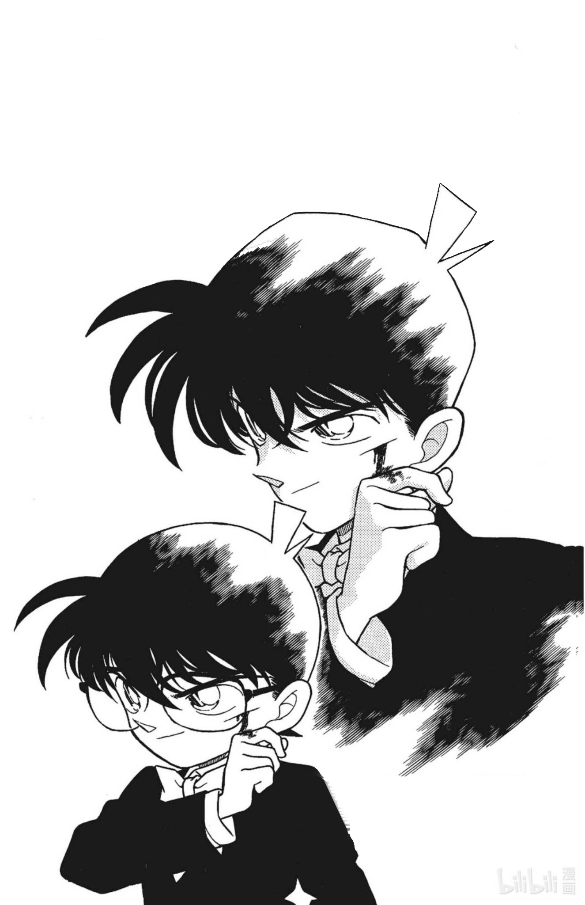
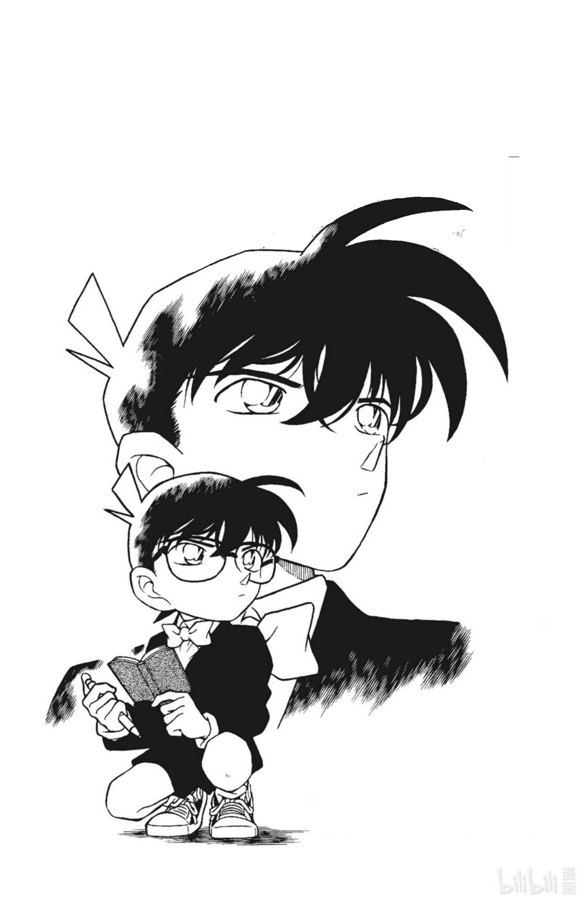
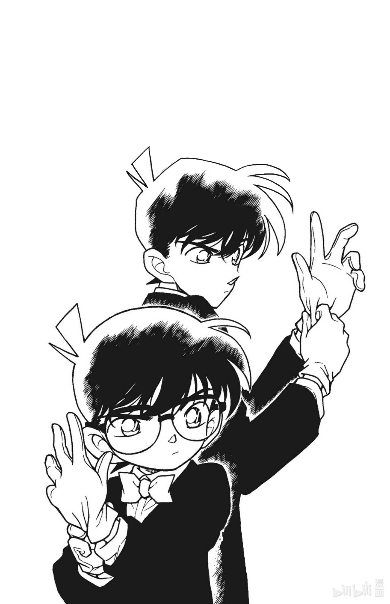
•V18F3—V18F5
前置：“初恋”的预警
暗示新兰的凶案那么多，为什么最具有代表性、大众印象最深的是初恋情人回忆事件呢？其一是麻衣学姐是小兰的“假想敌”之一，其二是小兰真的是小柯的初恋
前置：“初恋”的预警
暗示新兰的凶案那么多，为什么最具有代表性、大众印象最深的是初恋情人回忆事件呢？其一是麻衣学姐是小兰的“假想敌”之一，其二是小兰真的是小柯的初恋
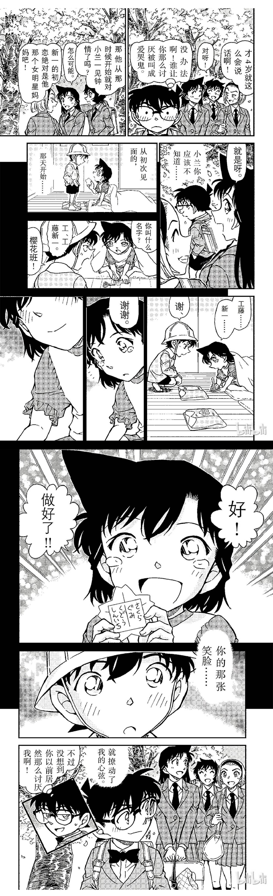
❶
麻衣学姐第一次亮相就给了sr一个炸弹——不止是推理，小兰在小柯另一大爱好的方面也是在“领域外”的状态
小兰觉得麻衣学姐面生，说明小兰不要说陪小柯一起进行足球方面的活动，她连看小柯练球踢球都很少（经常见面即便不知道姓名忘了面庞被提醒后也会有刹那恍然大悟的感觉，更何况按照小兰对新一的“独占欲”，她是会难以忘却曾经和新一朝夕相处，甚至和新一闹过绯闻的女生的）
麻衣学姐第一次亮相就给了sr一个炸弹——不止是推理，小兰在小柯另一大爱好的方面也是在“领域外”的状态
小兰觉得麻衣学姐面生，说明小兰不要说陪小柯一起进行足球方面的活动，她连看小柯练球踢球都很少（经常见面即便不知道姓名忘了面庞被提醒后也会有刹那恍然大悟的感觉，更何况按照小兰对新一的“独占欲”，她是会难以忘却曾经和新一朝夕相处，甚至和新一闹过绯闻的女生的）
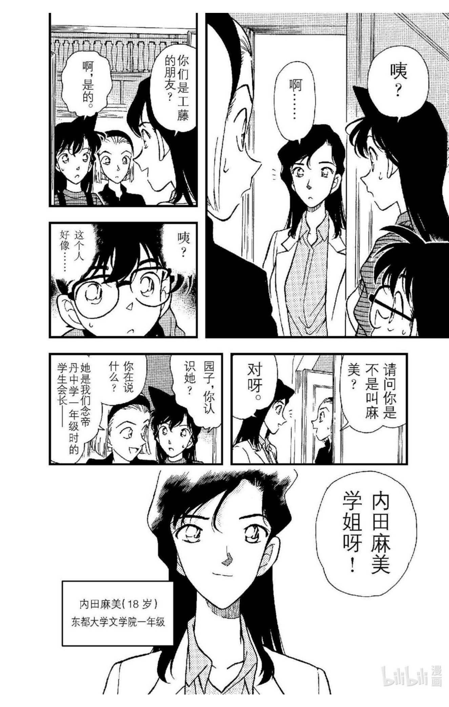
❷
学姐名台词“初恋本来就是很容易褪色的”
这句话代表着学姐对新一情感的总结，也是学姐对小兰的一个“警醒”，但小兰满脑子粉红泡泡，重点只在于“初恋”上面，并不由自主yy学姐和新一的爱情故事
学姐名台词“初恋本来就是很容易褪色的”
这句话代表着学姐对新一情感的总结，也是学姐对小兰的一个“警醒”，但小兰满脑子粉红泡泡，重点只在于“初恋”上面，并不由自主yy学姐和新一的爱情故事
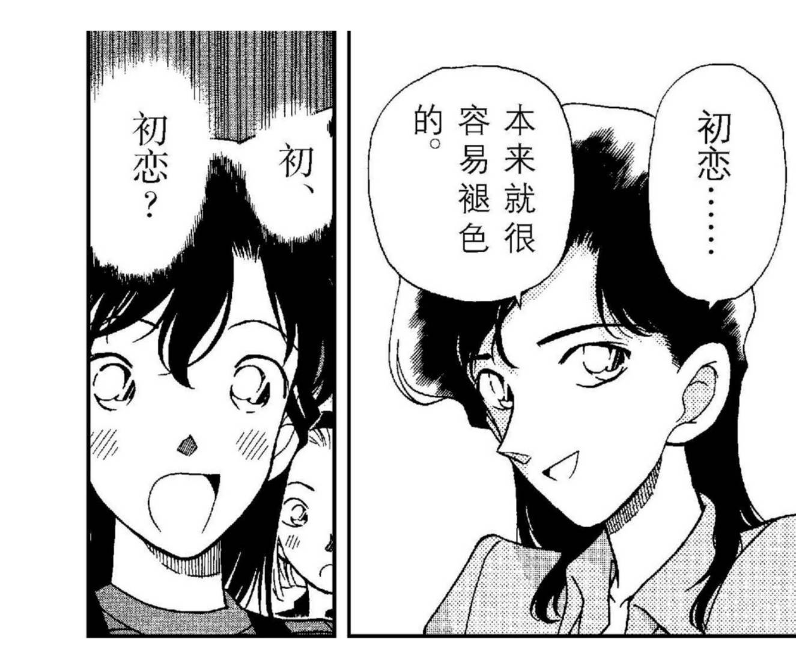
❸
party上小兰对自己的成果没有信心，学姐安慰
我觉得这句话往深层考虑，也有在隐喻新兰：小兰喜欢的是新一的外壳，那个英俊开朗、无所不能的少年侦探，但她从来就没有想过褪去了华丽的新一到底是什么样子，他也会受伤，也会沮丧，也不是一喊他他立马就能帮你实现愿望
party上小兰对自己的成果没有信心，学姐安慰
我觉得这句话往深层考虑，也有在隐喻新兰：小兰喜欢的是新一的外壳，那个英俊开朗、无所不能的少年侦探，但她从来就没有想过褪去了华丽的新一到底是什么样子，他也会受伤，也会沮丧，也不是一喊他他立马就能帮你实现愿望
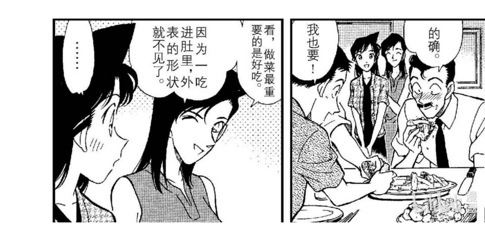
2026-03-14 22:29 | zha1114265738:只是喜欢名人吧？ 她那么讨厌侦探2026-03-14 23:46 | 贝贝171314:回复 zha1114265738 :小兰应该不是讨厌侦探（“沉睡的小五郎”“推理女王”她都不反感，和瑛佑也讨论过福尔摩斯），是讨厌工藤新一的侦探，因为侦探代表着小柯的未来，小柯会永远往上走，她怕两个人的距离会越来越大2026-03-15 10:01 | zha1114265738:回复 贝贝171314 :可瑛佑是cia啊 一样会越来越远2026-03-16 17:49 | 呵纸吗:她在甲子园提到的那个回忆...她觉得那时那个情形下的新一很酷2026-03-16 18:23 | 贝贝171314:回复 呵纸吗 :那里就连sr都觉得很怪
❹
“新一到底喜不喜欢柠檬派”这个简单的问题反应了小兰对新一的不了解（小柯到底喜不喜欢柠檬派，我们到现在都没一个准头），新兰间的不信任（别人说什么她就信什么）
（旁边，连园子觉得有点小兰emo小题大做，小柯更是无语到都上表情包了）
“新一到底喜不喜欢柠檬派”这个简单的问题反应了小兰对新一的不了解（小柯到底喜不喜欢柠檬派，我们到现在都没一个准头），新兰间的不信任（别人说什么她就信什么）
（旁边，连园子觉得有点小兰emo小题大做，小柯更是无语到都上表情包了）
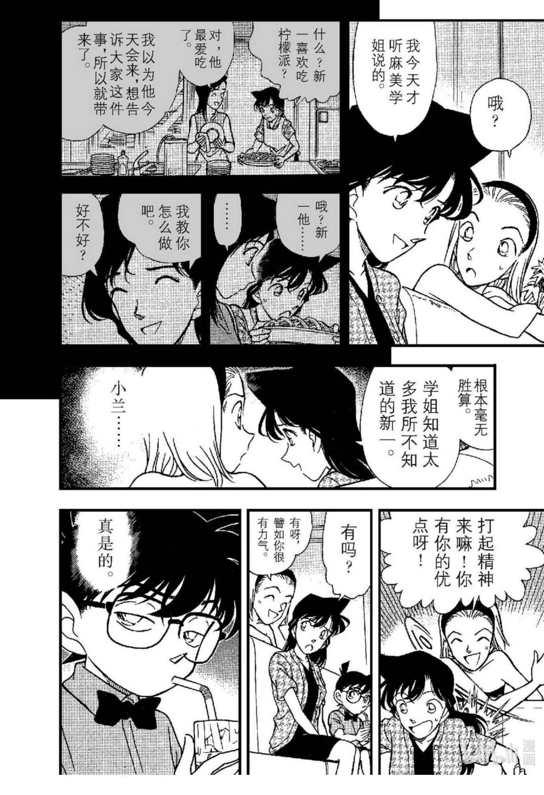
2026-03-14 22:29 | zha1114265738:下一话那个比有希子还了解新一的人就出现了
❺
小兰对新一、泽井学对学姐的所谓“爱情”，都是执念≥他们对对方本身的情感（小柯对小兰也有些，但没有前二者那么极端）
小兰和泽井学喜欢新一和学姐，但他们更喜欢“有个颜值高、学习好、能力强、有魅力的男/女朋友”
小兰对新一、泽井学对学姐的所谓“爱情”，都是执念≥他们对对方本身的情感（小柯对小兰也有些，但没有前二者那么极端）
小兰和泽井学喜欢新一和学姐，但他们更喜欢“有个颜值高、学习好、能力强、有魅力的男/女朋友”
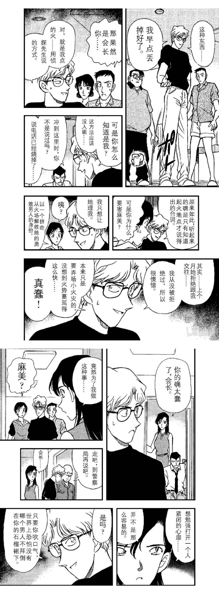
❻
初恋情人回忆事件的结局我一直不能理解
小兰这里不知道新一指的是谁，但在学姐笑着打哑迷的同时也跟着脸红，就好像她知道自己是告白故事的女主角一样
初恋情人回忆事件的结局我一直不能理解
小兰这里不知道新一指的是谁，但在学姐笑着打哑迷的同时也跟着脸红，就好像她知道自己是告白故事的女主角一样
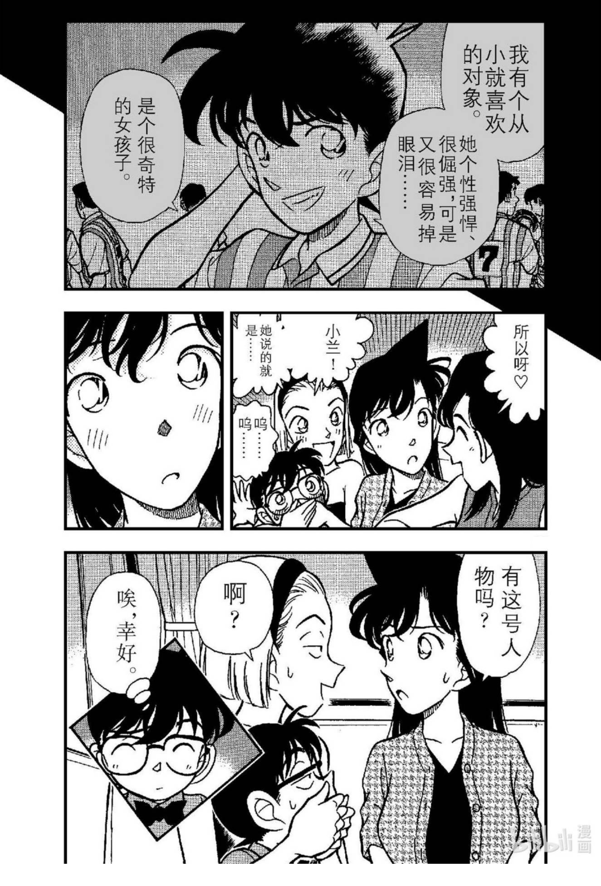
2026-03-14 09:06 | 贝贝171314:而且，我知道新一的话指的是小兰，但倔强也是小哀的性格，“倔强又容易掉眼泪”也可以让人联想到小哀初登场的剧情的结局，不知道这算不算一个伏笔2026-03-14 17:01 | 贴吧用户_JJJeGeW:这里的形容词指的是小兰毋庸置疑。但是在这个名为“初恋会褪色”的章节后面安排灰原登场，而且通篇很少哭泣的她在初登场这整个大故事里连哭两次，嗯，一定是巧合2026-03-14 17:11 | 贝贝171314:回复 贴吧用户_JJJeGeW :我就是这个意思2026-03-30 12:27 | 魔勰霖:听到新一有喜欢的人→下意识想自己，mll脸红→听完后脑子还没反应过来，继续脸红，一想觉得不对，转头流汗问园子“这人谁啊？”→园子和柯无语，你对自己真是没有一个清晰的认知啊。柯内心“幸好”→幸好mll没反应过来自己初恋是她？2026-03-30 14:05 | 贝贝171314:不然电话轰炸柯不完了（好吧，其实没有这点，幸好的是以后可以给mll准备一个浪漫的表白，不会这么快的结束爱情长跑，结果等来的是伦敦马拉松
）
回复 魔勰霖 :😙
“初恋本来就是很容易褪色的”
俗话说，有过去式，就有现在式
这不，下一话，小哀闪亮登场
（柯哀转场）
柯哀初相识极具戏剧性，多次反转，小柯心境的多次变化，多次“第一次”，柯哀即便在针锋相对、互相误解对方的情况下，也能一见如故、非常默契
俗话说，有过去式，就有现在式
这不，下一话，小哀闪亮登场
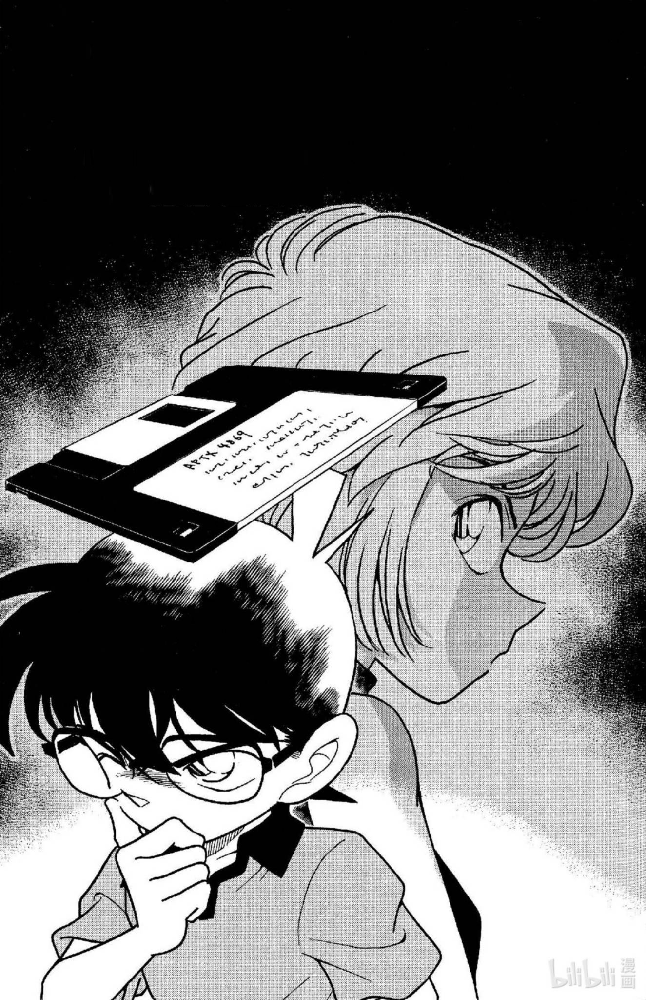
柯哀初相识极具戏剧性，多次反转，小柯心境的多次变化，多次“第一次”，柯哀即便在针锋相对、互相误解对方的情况下，也能一见如故、非常默契
2026-03-14 17:01 | 贴吧用户_JJJeGeW:回复 贝贝171314 :他们两个在故事扉页有非常多这种站位的分镜
*•V18F3—V19F1『宔』（小哀出场）
（也有点V1F3、V2F1、V2F8、V6F6—V6F8的内容）
我以跟你同样的状态，和你相见——
小哀初登场就预示着她的身份不简单，上一个从门口走进教室，站在讲台前以转学生的身份和帝丹小学的各位见面的人是谁？就是小柯啊！
而且，一般情况下，在没见到人前越调侃什么就越有什么，元太已经告诉了我们，这位转学生，和小柯一样，是个看起来非比寻常的“怪人”
（也有点V1F3、V2F1、V2F8、V6F6—V6F8的内容）
我以跟你同样的状态，和你相见——
小哀初登场就预示着她的身份不简单，上一个从门口走进教室，站在讲台前以转学生的身份和帝丹小学的各位见面的人是谁？就是小柯啊！
而且，一般情况下，在没见到人前越调侃什么就越有什么，元太已经告诉了我们，这位转学生，和小柯一样，是个看起来非比寻常的“怪人”
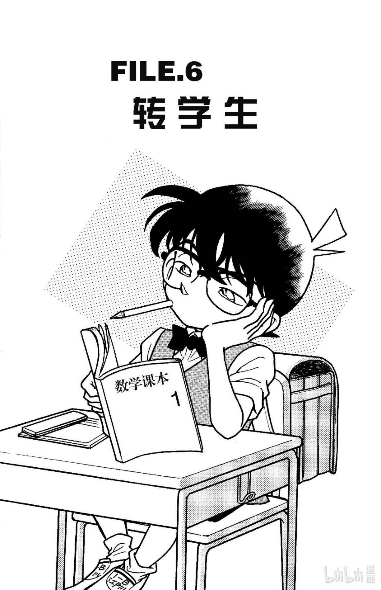
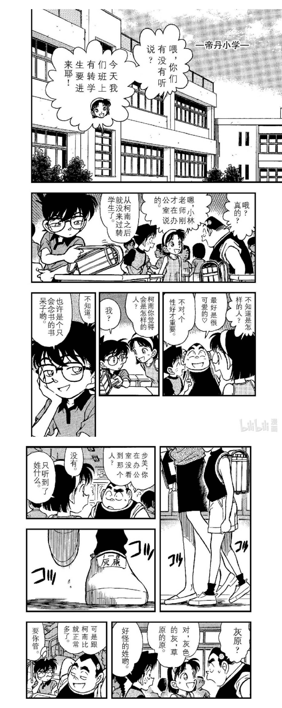
柯哀两个人第一天上学就凭借着各自的魅力迷倒一大片（）
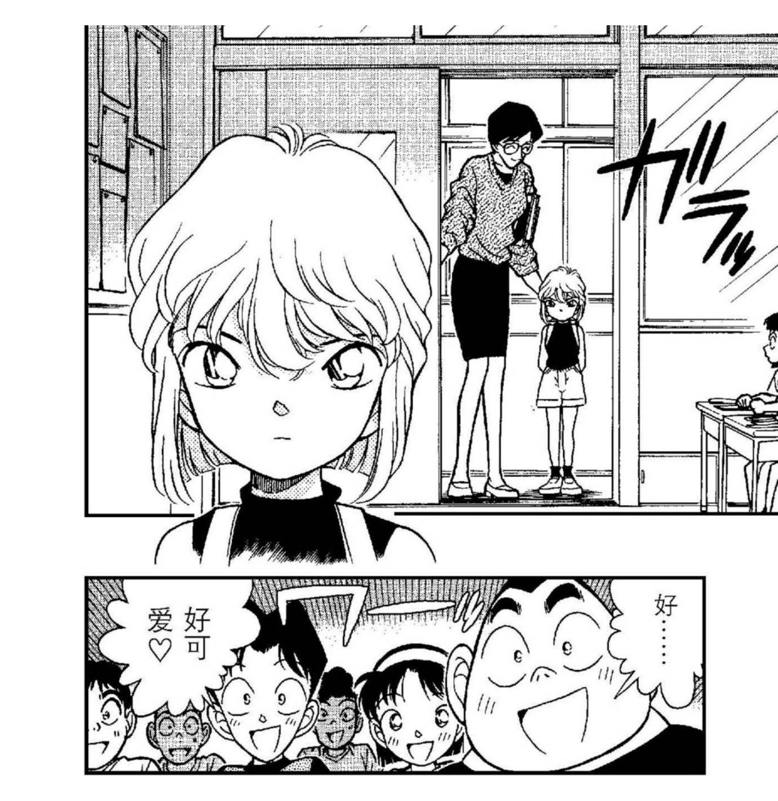
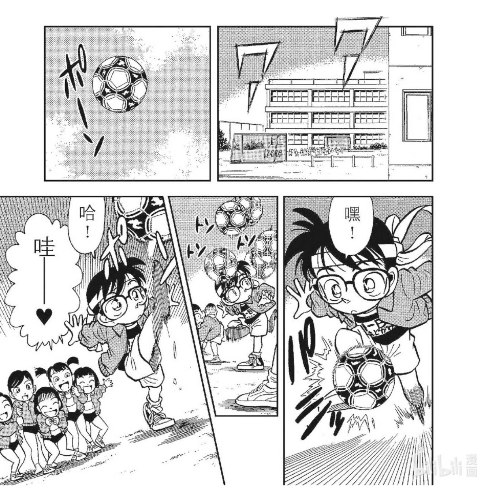
我坚定地朝向你——
小哀就是奔着小柯来的，所以直接而果决地来到小柯旁边的座位
小柯也从刚刚的不以为然，开始好奇这个高冷且直接的女孩
小哀这里是彻底的「哀伤」时期，很冷，用冷漠“刺痛”别人（这里无视小林老师和元太，后来无视步美和光彦），也“刺痛”自己（一直在压抑自己的情绪，可有些伤痛，不是漠视就代表着没有了）
但，没关系，冷霜总有被阳光融化的一天，后面会越来越好的
小哀就是奔着小柯来的，所以直接而果决地来到小柯旁边的座位
小柯也从刚刚的不以为然，开始好奇这个高冷且直接的女孩
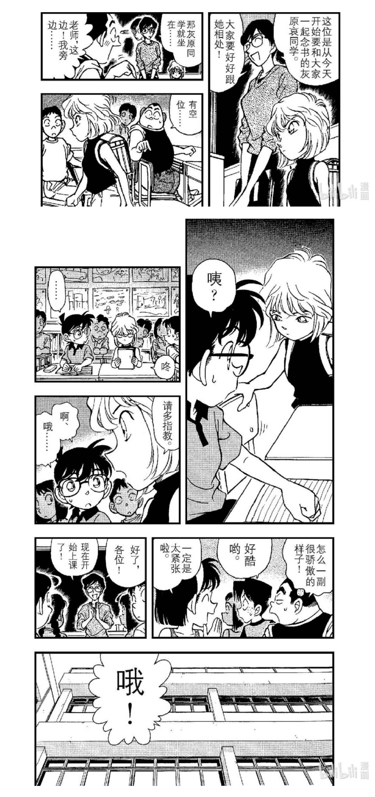
但，没关系，冷霜总有被阳光融化的一天，后面会越来越好的
被邀同行：
柯哀都没有童年玩伴（小哀不要说童年玩伴了，童年都没有），也对其他人保持着很大的警惕性和距离感，并且他们身上的「傲」总是会让刚开始认识，不熟的人望而却步
如果不是三小，可能柯哀在学校的情况还是走原来的老路，做孤独的“独行侠”
三小和柯哀志同道合，又都愿意靠近柯哀，和柯哀相处，五个人何尝不算刎颈之交，三小何尝不算弥补了柯哀童年的某些遗憾，治愈了柯哀？（特别是步美，简直就是柯哀的直球小天使）甚至后来，成长起来的他们做了柯哀可靠（虽然偶尔还是会调皮捣蛋）的战友
再值得一提的是，三小都是在姐姐的下一话登场的，他们和小柯的第一案就是青色古堡的雏形
柯哀都没有童年玩伴（小哀不要说童年玩伴了，童年都没有），也对其他人保持着很大的警惕性和距离感，并且他们身上的「傲」总是会让刚开始认识，不熟的人望而却步
如果不是三小，可能柯哀在学校的情况还是走原来的老路，做孤独的“独行侠”
三小和柯哀志同道合，又都愿意靠近柯哀，和柯哀相处，五个人何尝不算刎颈之交，三小何尝不算弥补了柯哀童年的某些遗憾，治愈了柯哀？（特别是步美，简直就是柯哀的直球小天使）甚至后来，成长起来的他们做了柯哀可靠（虽然偶尔还是会调皮捣蛋）的战友
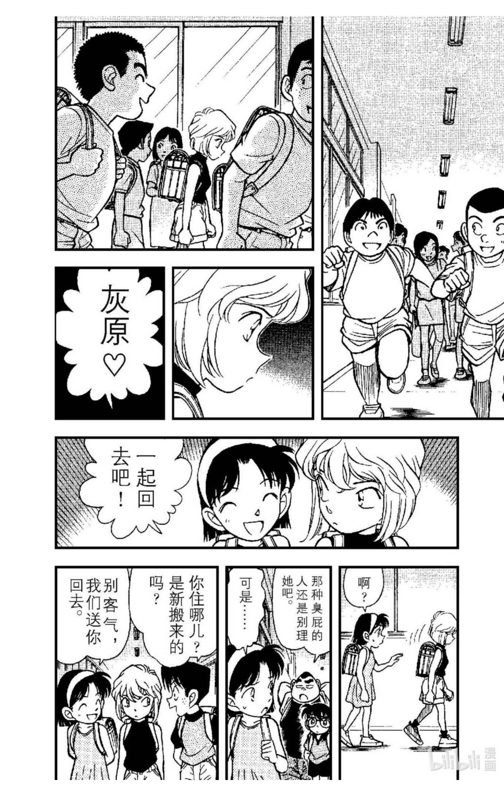
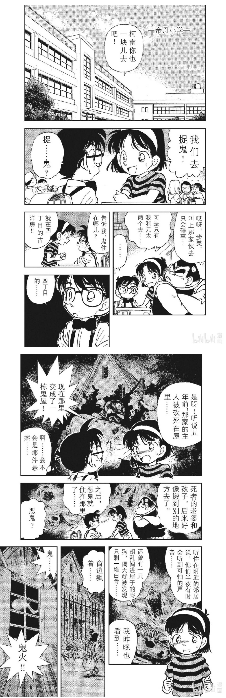
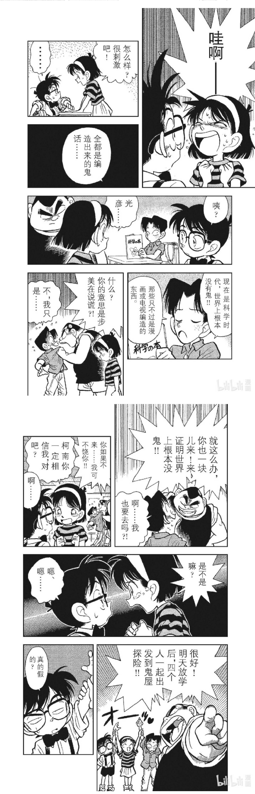
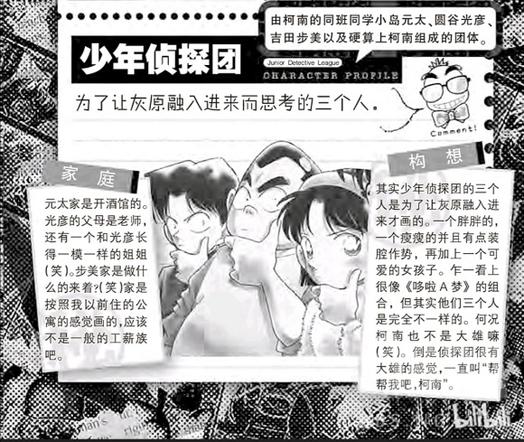
2026-03-14 22:31 | zha1114265738:三小只拉窗帘那里就能独当一面了
小哀对小柯第一个「恶作剧」
（小柯对小哀是有一见如故的特殊性的，就比如说小哀对其他人都非常冷淡的时候，就已经像后期那样，喜欢时不时逗小柯）
小哀目前对小柯是因为姐姐而产生的「考察阶段」（他确实优秀但鲁莽，也没能救下姐姐，她设下一个“局"，倒要看看被姐姐赞不绝口的他究竟靠不靠谱），顺着光彦问题说出地址是想在晚上的“大计”前给小柯一个“开胃菜”
小哀偷看了一眼小柯，成功捕获一直苦思冥想的大侦探，知道某人成功“上钩”了…
小柯再次好奇小哀
（当然或许也有被小哀微笑给看愣了的原因）
（小柯对小哀是有一见如故的特殊性的，就比如说小哀对其他人都非常冷淡的时候，就已经像后期那样，喜欢时不时逗小柯）
小哀目前对小柯是因为姐姐而产生的「考察阶段」（他确实优秀但鲁莽，也没能救下姐姐，她设下一个“局"，倒要看看被姐姐赞不绝口的他究竟靠不靠谱），顺着光彦问题说出地址是想在晚上的“大计”前给小柯一个“开胃菜”
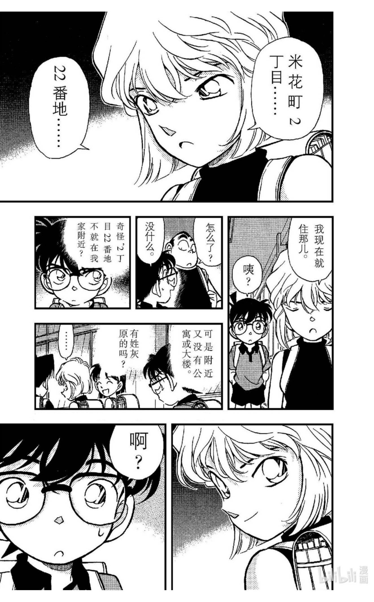
小柯再次好奇小哀
（当然或许也有被小哀微笑给看愣了的原因）
只是个开头，一节课的时间，小柯对小哀的看法就已经发生第一次反转了，如图所示：
小哀对于小柯来说也有一见如故的特殊性，自从小哀一来，小柯的眼珠子就时不时地盯着人家，想要了解的想法层层入深
小哀对于小柯来说也有一见如故的特殊性，自从小哀一来，小柯的眼珠子就时不时地盯着人家，想要了解的想法层层入深
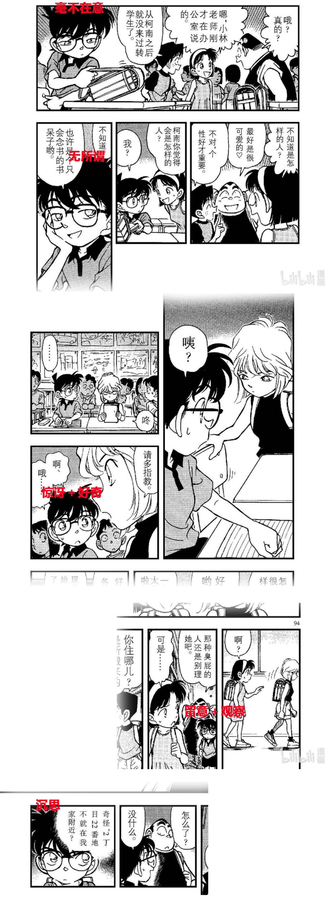
加入少侦：
三小热情地向小哀介绍少侦，邀请小哀加入少侦，但小哀只想着小柯
当初也是三小的满腔热忱下，小柯才陪着成立少侦
再者，即便是早期还没那么深的情感，无论是有些不情愿的小柯还是冷漠至极的小哀，他们都没有说少侦是三小做的“幼稚鬼游戏”，没有打破三小的侦探梦想
三小热情地向小哀介绍少侦，邀请小哀加入少侦，但小哀只想着小柯
当初也是三小的满腔热忱下，小柯才陪着成立少侦
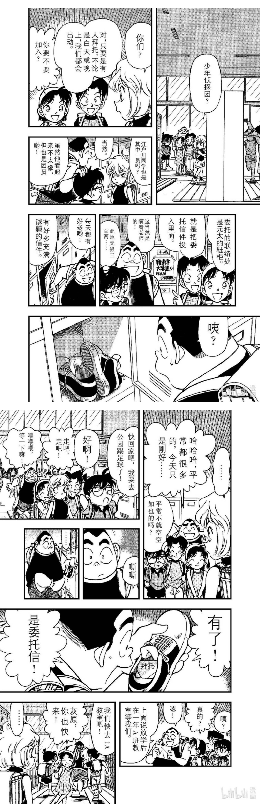
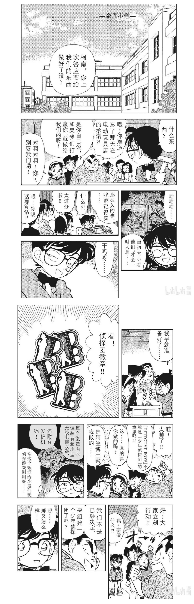
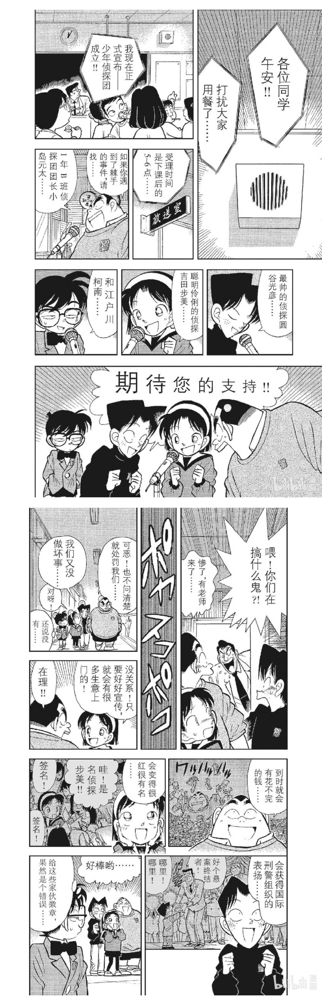
同样是邀请，同样都沉默不语，相对于上次完全寂然，这次小哀选择用默默的行动应答步美
从了解俊也哥哥情况到搜查俊也哥哥物品，从教室到俊也家，小哀的目光一直在小柯身上，随着他的动作移动，和他同频
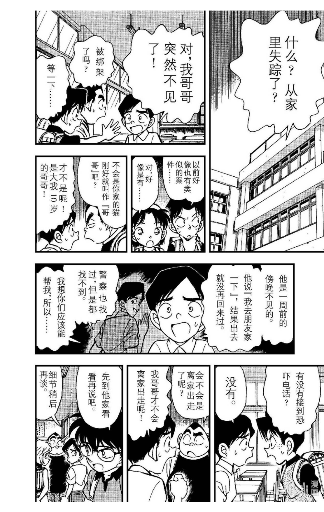

小柯听到了着装瞬间想到了黑衣组织
小哀当然也想到了黑衣组织，她虽然对小柯信息了如指掌，但目前还没看过小柯侦破案子的时刻，加上不知道小柯对黑衣组织的具体想法，所以她凝视着他跟着他，想要看看他怎么做
小哀当然也想到了黑衣组织，她虽然对小柯信息了如指掌，但目前还没看过小柯侦破案子的时刻，加上不知道小柯对黑衣组织的具体想法，所以她凝视着他跟着他，想要看看他怎么做
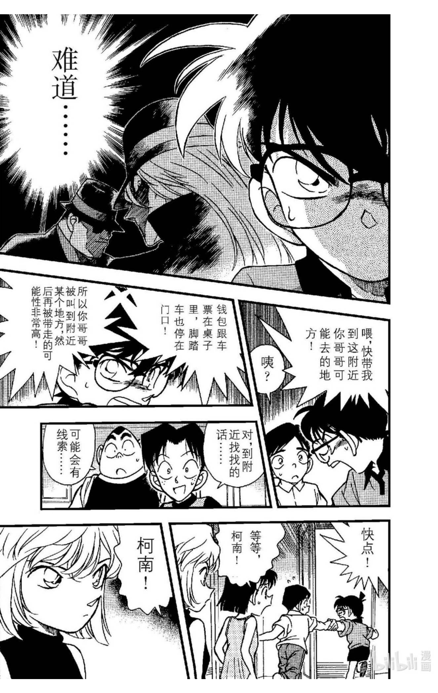
2026-03-14 17:47 | 贝贝171314:更正一下：这里我前面的意思是“小柯想到了黑组，小哀听那个描述，当然也能想到小柯现在想到了黑组”
「双鲨雷达」开启
小柯思考，小哀和他同频的神色说明她也和他想到一块去了
小柯思考，小哀和他同频的神色说明她也和他想到一块去了
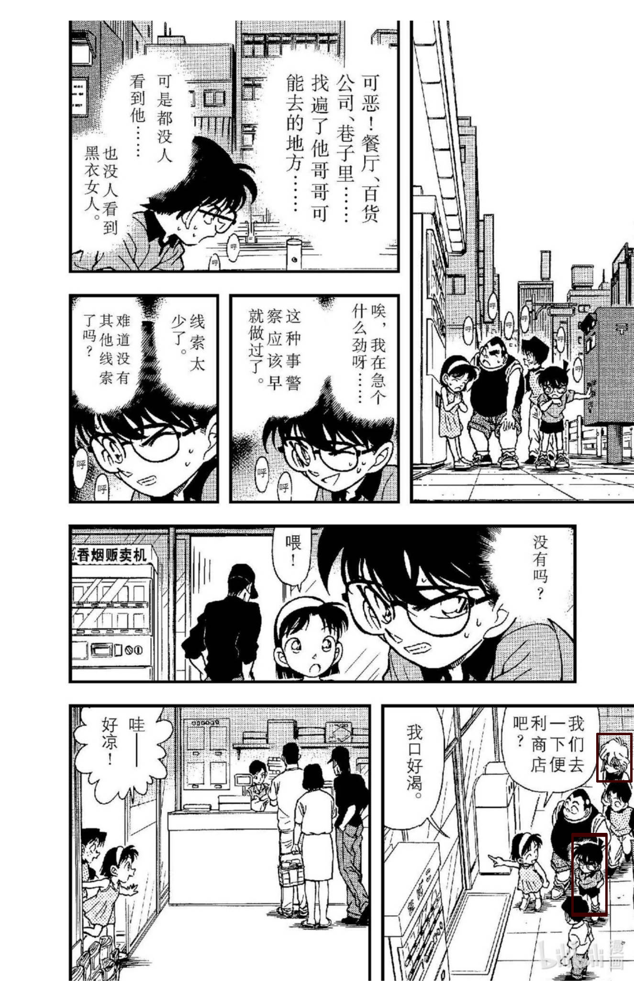
小柯直接一把跳下台子的动作真的好帅꒰* ॢꈍ◡ꈍ ॢ꒱✿
假钞案其实隐喻着宫野姐妹
俊也：银狐看中了我哥哥惟妙惟肖的绘画能力，把他囚起来，让他帮他们做假钞
姐姐：黑组看中了我妹妹极度逆天的化学能力，把她关起来，让她帮他们搞研发
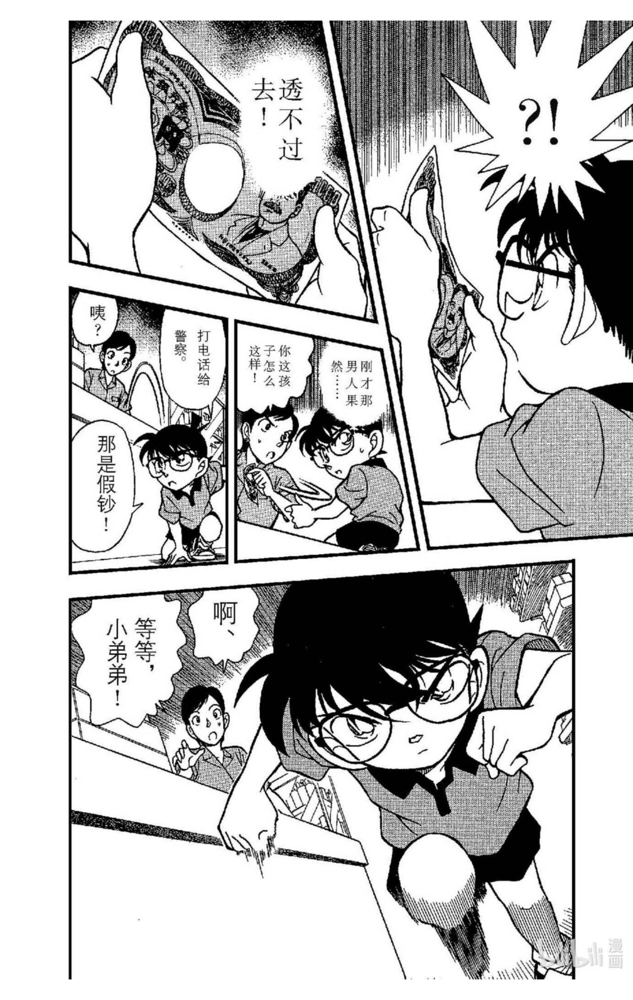
俊也：银狐看中了我哥哥惟妙惟肖的绘画能力，把他囚起来，让他帮他们做假钞
姐姐：黑组看中了我妹妹极度逆天的化学能力，把她关起来，让她帮他们搞研发
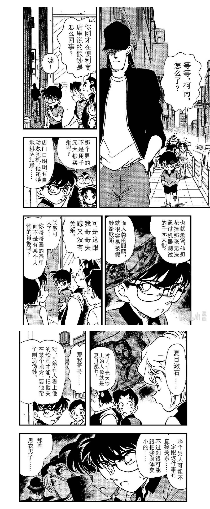
依旧暗自观察他的她和吃瘪后更加好奇她的他——
哀妈带着仨小孩对柯爸死缠烂打（bushi）
小柯为了不让三小和小哀陷入危险，演戏加持，可怎么也没有料到他迷惑了嫌犯，甩开了三小，却栽在了第一次见面的小姑娘身上
在和小柯陌生且对他有间隙的情况下，完全看穿小柯，柯哀怎么不算是天生一对呢？
哀妈带着仨小孩对柯爸死缠烂打（bushi）
小柯为了不让三小和小哀陷入危险，演戏加持，可怎么也没有料到他迷惑了嫌犯，甩开了三小，却栽在了第一次见面的小姑娘身上
在和小柯陌生且对他有间隙的情况下，完全看穿小柯，柯哀怎么不算是天生一对呢？
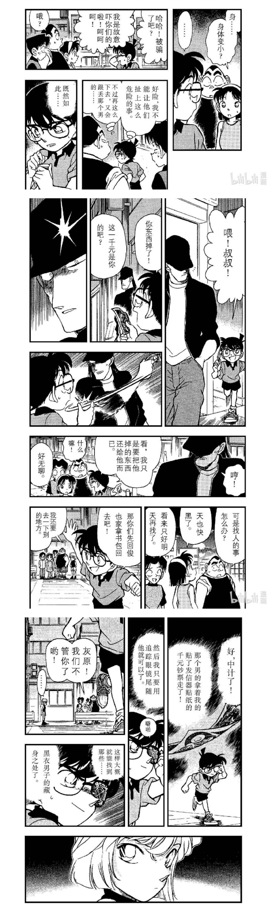
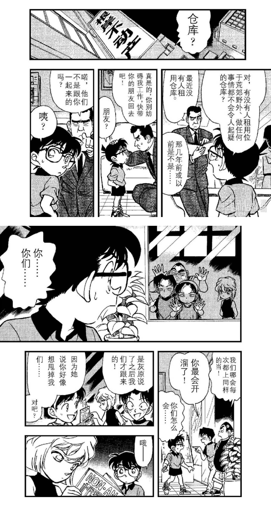
推理中的小柯真有魅力
果然凡事都要靠自己
俊也哥哥自救，他的暗语让小柯最终确认地点
果然凡事都要靠自己
俊也哥哥自救，他的暗语让小柯最终确认地点
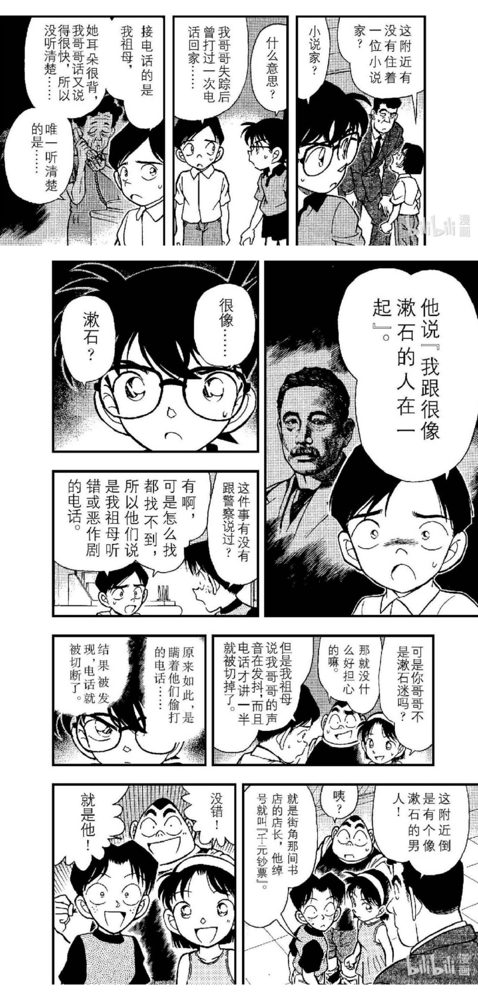
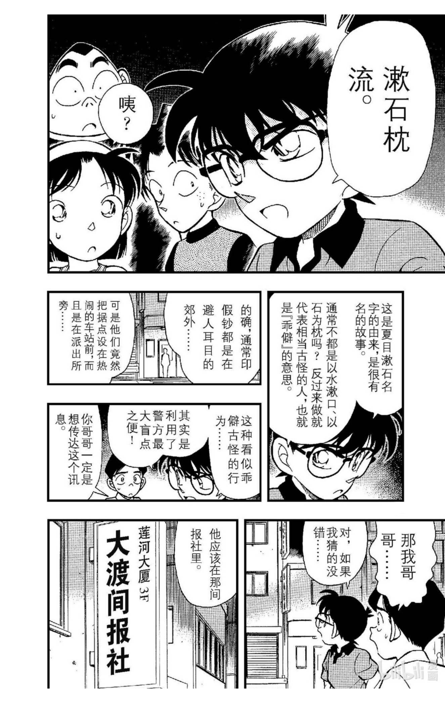
小柯第一次想到了姐姐
辖区警方不相信少侦，小柯决定和目暮警官通话
想到“黑衣女郎”，小柯想到了姐姐
（这其实是一个伏笔，说明本话真正要讲的“黑衣女郎”和姐姐关系匪浅）
辖区警方不相信少侦，小柯决定和目暮警官通话
想到“黑衣女郎”，小柯想到了姐姐
（这其实是一个伏笔，说明本话真正要讲的“黑衣女郎”和姐姐关系匪浅）
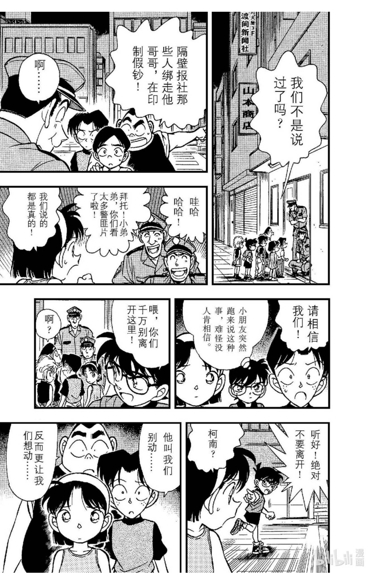
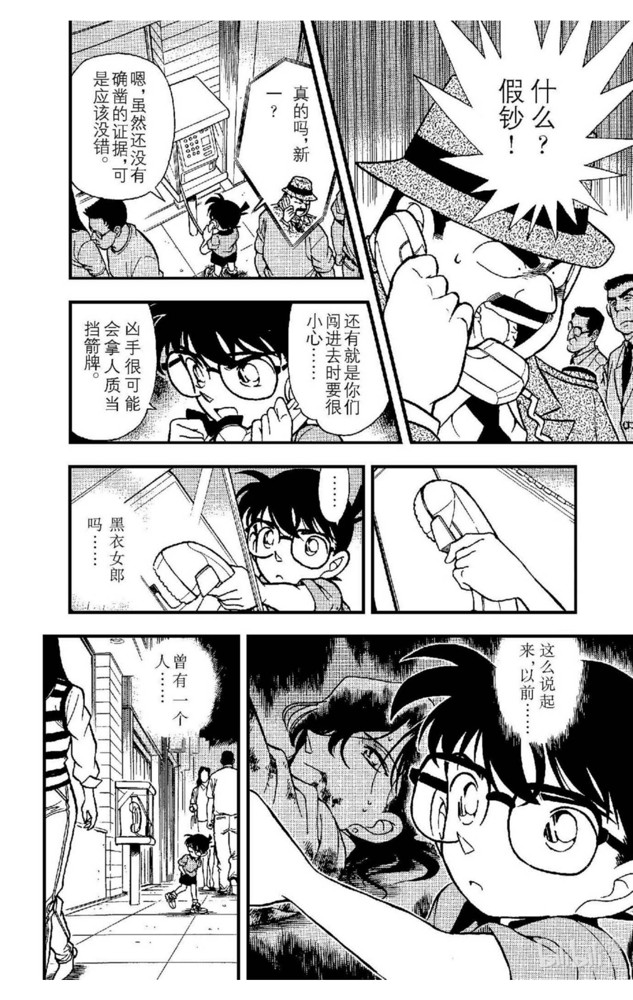
少侦其他人先行上楼去找证据
（后头我们知道，如果小哀没有确保三小能即便遇险也能脱困的能力的话，也是会阻止三小冒险的，所以这里小哀就已经想好如果银狐来，小柯没到要怎么样反击怎么样保护三小，也因此后来小哀丝毫不慌，开枪那里拿枪也很果决）
小哀先行发现了关键（特殊颜料），小柯也发现人都不在了
（后头我们知道，如果小哀没有确保三小能即便遇险也能脱困的能力的话，也是会阻止三小冒险的，所以这里小哀就已经想好如果银狐来，小柯没到要怎么样反击怎么样保护三小，也因此后来小哀丝毫不慌，开枪那里拿枪也很果决）
小哀先行发现了关键（特殊颜料），小柯也发现人都不在了
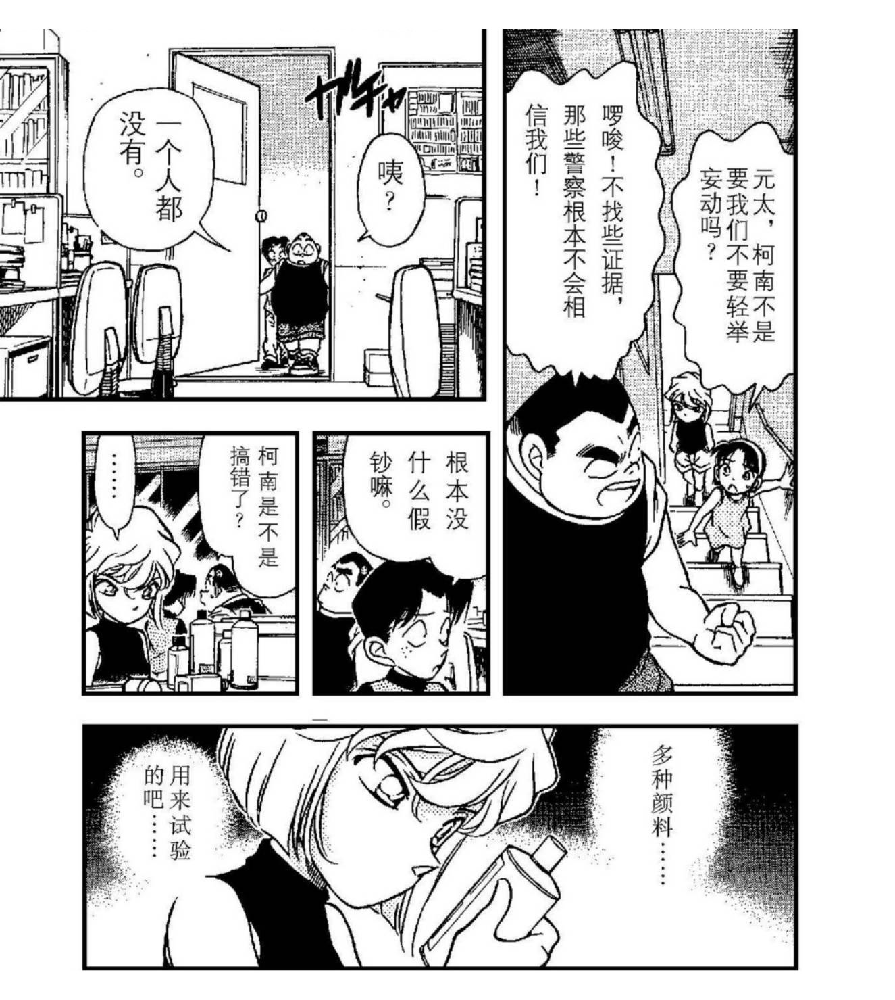
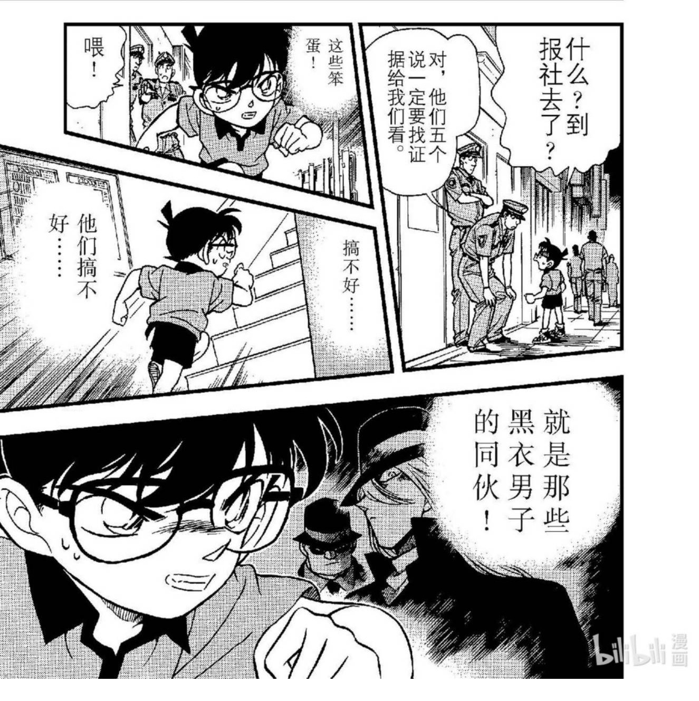
危机降临，小柯带着他一如既往自信满满的帅姿登场😎
小哀在嫌犯进门，小柯登场前只有一个一开始冷冷撇了一眼的镜头，估计三小害怕紧张的时候，她在想「考察阶段」的小柯能不能在她出手前救下大家
（而小柯也没有辜负她跟三小）
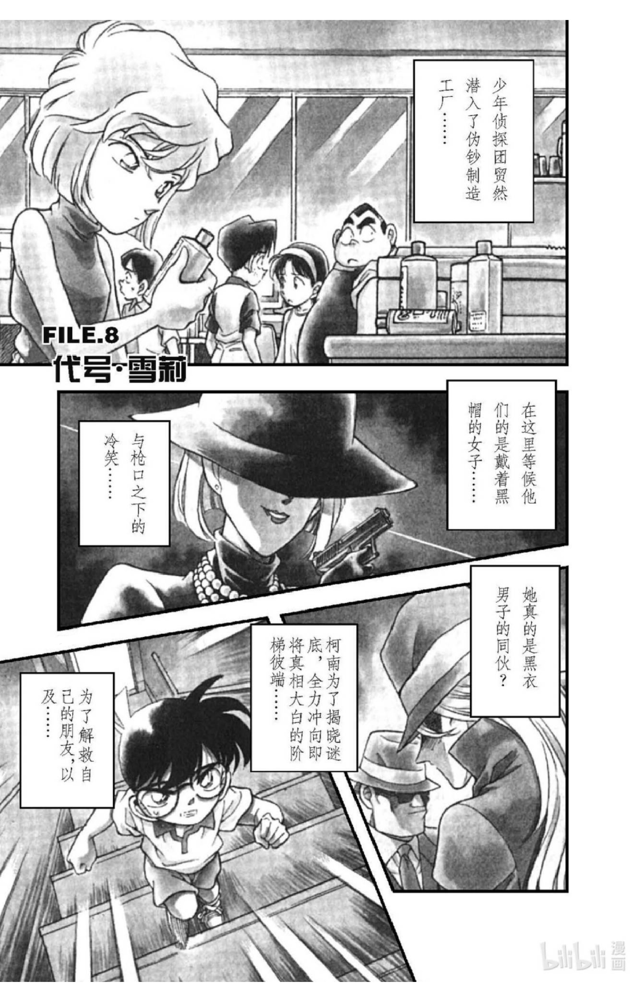

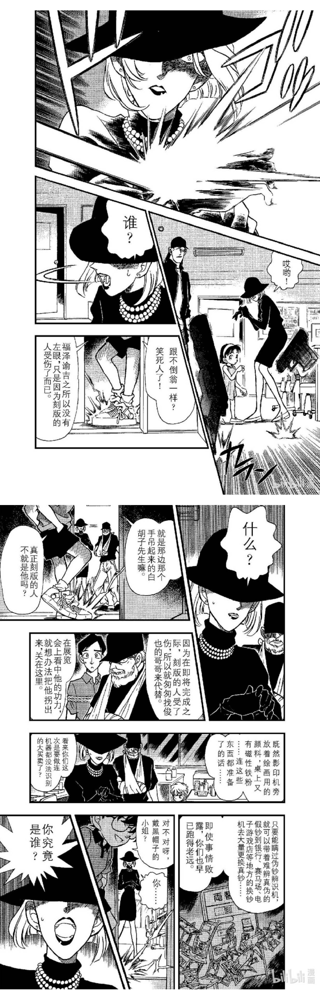
（而小柯也没有辜负她跟三小）
柯哀混合双打成功制服敌人.ing
两个人都非常帅（害羞）
小哀那一枪，又超出了小柯对她的想象
两个人都非常帅（害羞）
小哀那一枪，又超出了小柯对她的想象

小柯这才明白自己乌龙了
不过这里也能看出他的急躁，居然光明正大地问银狐头头琴酒和伏特加
幸好她不是组织的人，不然附近有组织的人在监视和监听，又或者这些犯人中途逃跑了（别人不知道，但个别黑组成员确实有越狱的实力），小柯和他身边人就惨了
不过这里也能看出他的急躁，居然光明正大地问银狐头头琴酒和伏特加
幸好她不是组织的人，不然附近有组织的人在监视和监听，又或者这些犯人中途逃跑了（别人不知道，但个别黑组成员确实有越狱的实力），小柯和他身边人就惨了
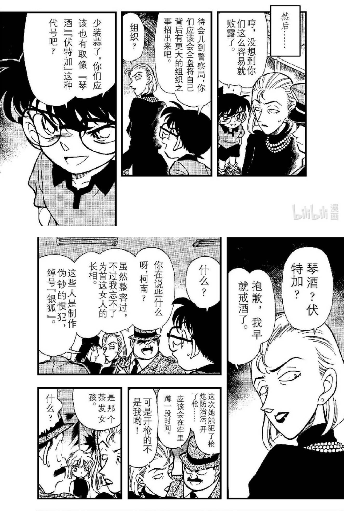
2026-04-29 16:11 | zha1114265738:游戏发布会那就说过了 所以不算太危险吧
小哀哭一方面是为了规避旁人的猜忌（为了避免怀疑，前有小柯装小孩（P32），后有小哀装哭），但主要还是顺着目暮警官给的“情景”（我被这个警察叔叔凶哭了），让小柯暂时转移注意力
不过小柯啊，你的这句内心OS，很快就会让你吃苦头的，小哀会告诉你，不要以貌取人小看人（偷笑）
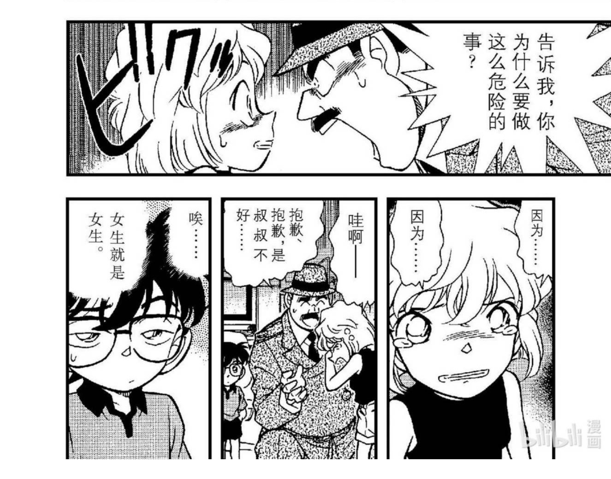
（P23继续）
小柯对小哀有着天然的亲近感，P18也说了，他和小哀一样，对陌生人有着警惕性，然而此前那么多次小哀露出“她很可疑”的“破绽”，他对她却只有好奇没有怀疑
如今小哀在小柯送她的回家路上自爆身份，明牌到都把药名说出来了（A药也不是那种大众药啊），再加上这时候他的观点还是和黑组正面硬刚，他第一反应是装傻而不是一如曩昔的警惕防备地问一句“你到底是谁”，说明他一早就发了一张好人身份牌给她，心里自始至终都不相信她会是坏人
小柯对小哀有着天然的亲近感，P18也说了，他和小哀一样，对陌生人有着警惕性，然而此前那么多次小哀露出“她很可疑”的“破绽”，他对她却只有好奇没有怀疑
如今小哀在小柯送她的回家路上自爆身份，明牌到都把药名说出来了（A药也不是那种大众药啊），再加上这时候他的观点还是和黑组正面硬刚，他第一反应是装傻而不是一如曩昔的警惕防备地问一句“你到底是谁”，说明他一早就发了一张好人身份牌给她，心里自始至终都不相信她会是坏人
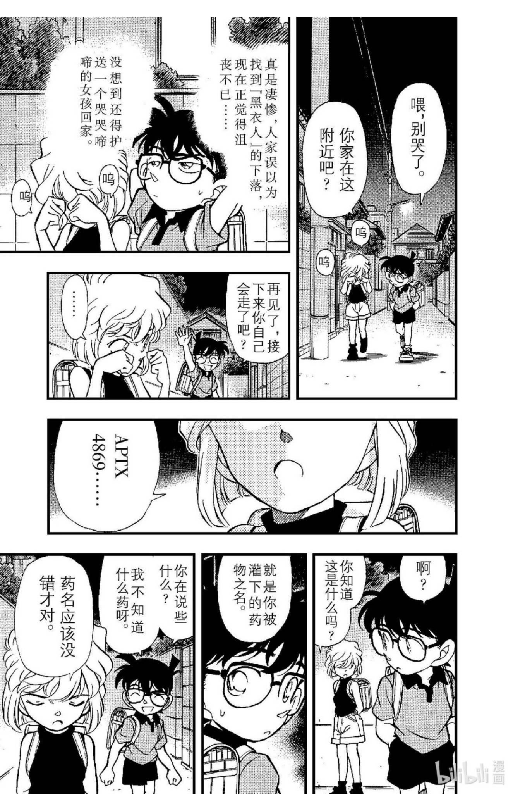
承包小哀的盛世美颜 🪷
神秘小姐正式上线，侦探先生彻底懵B
（估计大侦探之前都没有想过有一天他会有一堆问号却大脑一片空白的一天）
雪莉酒又成为“装在瓶子里的西班牙阳光”，黑组就像一个困着小哀的“瓶子”，而小哀也是黑组仅剩的“阳光”
其次，雪莉酒有甜的和不甜的两种，就好像小哀的「有哀」时期和「有爱」时期
（我对于酒不了解，有关于雪莉酒的知识靠百度百科，有错欢迎指正）
神秘小姐正式上线，侦探先生彻底懵B
（估计大侦探之前都没有想过有一天他会有一堆问号却大脑一片空白的一天）

其次，雪莉酒有甜的和不甜的两种，就好像小哀的「有哀」时期和「有爱」时期
（我对于酒不了解，有关于雪莉酒的知识靠百度百科，有错欢迎指正）
2026-03-15 12:29 | 贝贝171314:更正：“雪莉酒又成为”改成“雪莉酒又称为”
关于小哀是18岁的年龄这点，在竞技场无差别胁迫事件前就有明确表示了
而且你们看这张图柯哀的脚，不是静止，感觉两个人都想要靠近彼此，或者其中一个人想要靠近另外一个人
而且你们看这张图柯哀的脚，不是静止，感觉两个人都想要靠近彼此，或者其中一个人想要靠近另外一个人
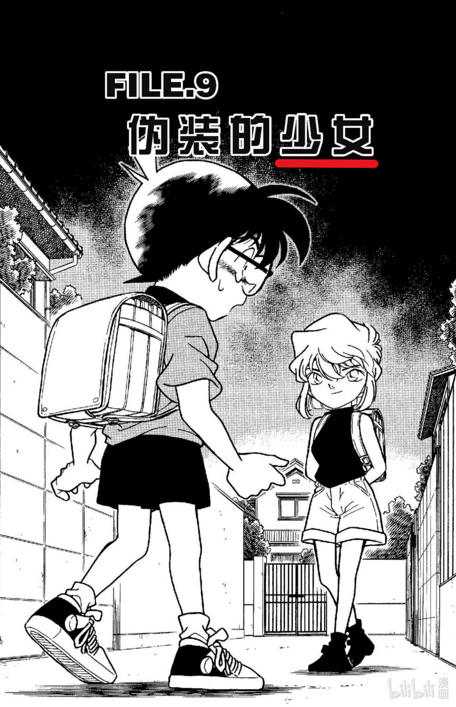
小柯确实备受惊吓，大号都出来了
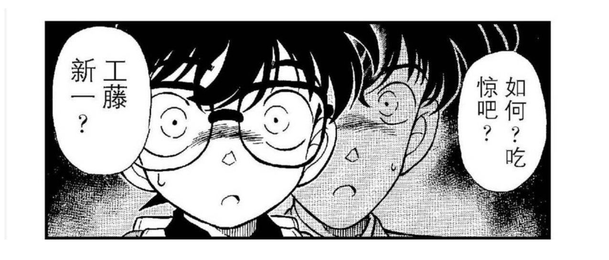
之前小哀就已经查出小柯所有底细，小柯在假钞案的表现也不负她之前推测的“鲁莽冲动轻敌侦探”：一听到黑组没什么准备就急吼吼地去找，过于高调（丝毫不察自己现在是江户川柯南不是工藤新一），自以为和黑组对抗地只有自己
小哀给了小柯一个假设，一个让他认清自己现在处境的假设
不得不说，小哀演技确实有天赋，这模样，谁看见不以为是大反派啊😂
（最后一幕依旧很有情头感）
小哀给了小柯一个假设，一个让他认清自己现在处境的假设
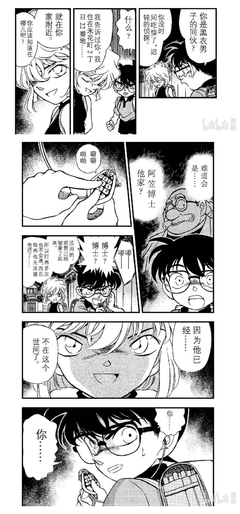
（最后一幕依旧很有情头感）
小柯短短一天时间内因为小哀连吃瘪两次
“还蛮好玩的”可以是上学蛮好玩的，也可以是欣赏小柯搓手顿脚蛮好玩的（笑）
“还蛮好玩的”可以是上学蛮好玩的，也可以是欣赏小柯搓手顿脚蛮好玩的（笑）
（还是P23P47的“小柯对小哀一见如故，不希望她是坏人”）
小柯先是对小哀黑组成员身份再次感到不可置信，然后才是生气
他对这个少女的关注甚至超过了对黑组本身的“在意”
（博士还疑惑，“小哀不是准备自己和你说吗”）
小柯先是对小哀黑组成员身份再次感到不可置信，然后才是生气
他对这个少女的关注甚至超过了对黑组本身的“在意”
（博士还疑惑，“小哀不是准备自己和你说吗”）
双鲨论前言
柯哀的名字各自都有侦探的元素，而且对名字都有一种“别人的看法再重要，老子依然觉得老子取的名字好”的想法
柯哀的名字各自都有侦探的元素，而且对名字都有一种“别人的看法再重要，老子依然觉得老子取的名字好”的想法
柯哀都是想要回/去工藤家的路上，在工藤家的大门口遇到的博士
一个忘年交，一个后来有着父女羁绊的「监护人」，博士都是柯哀人生中很重要的人物
一个忘年交，一个后来有着父女羁绊的「监护人」，博士都是柯哀人生中很重要的人物
小哀第一天就给小柯秀了波推理
小哀虽然也不是专业的，肯定没有小柯他们那个高度，但观察力和侦探能力👍
小哀虽然也不是专业的，肯定没有小柯他们那个高度，但观察力和侦探能力👍
小哀真的是小柯的至宝，在两个人还没见面，她就救了他
“我非常感兴趣的研究对象”，好奇和求知欲，是两个人逐渐靠近，关系往上升的开始…
姐姐的去世掩盖了小哀对小柯的这份探知，但等到结尾误会解除，这份感觉又回来了
姐姐的去世掩盖了小哀对小柯的这份探知，但等到结尾误会解除，这份感觉又回来了
2026-03-15 17:04 | zha1114265738:那时候他俩就连在一起了
小柯唯一一次吼小哀
柯哀因为A药都开启了惊心动魄的生活，同时也因为A药生还（小哀不用说，小柯是没有A药，当时就要接受琴酒的补枪）；两个人不仅经历相同，智商相通，而且三观一致
另外，小柯不理解小哀研制A药，小哀也不理解她父母研制A药，在他们反复试验A药解药的过程，小柯渐渐发现这个外冷内热的女生更多的闪光点，小哀慢慢了解她素未谋面的父母
柯哀因为A药都开启了惊心动魄的生活，同时也因为A药生还（小哀不用说，小柯是没有A药，当时就要接受琴酒的补枪）；两个人不仅经历相同，智商相通，而且三观一致
另外，小柯不理解小哀研制A药，小哀也不理解她父母研制A药，在他们反复试验A药解药的过程，小柯渐渐发现这个外冷内热的女生更多的闪光点，小哀慢慢了解她素未谋面的父母
2026-03-15 17:05 | zha1114265738:并不是吧？ 我记得再会篇还有一次呢？
情头
虽然还处于相互误解状态，但两个人该互怼的时候还是互怼该调侃的时候还是调侃
难道这就是传说中的欢喜冤家🤭 “我无处可去只能来找你”“你还是先继续待在这里当小学生吧”小柯对小哀“阴阳怪气”的同时，也在回答小哀刚刚被他打断的叙述（而且小柯用了“这里”，'虽然他还没有打消对她的误解，但已经不由自主在模糊和她的边界了）
难道这就是传说中的欢喜冤家🤭 “我无处可去只能来找你”“你还是先继续待在这里当小学生吧”小柯对小哀“阴阳怪气”的同时，也在回答小哀刚刚被他打断的叙述（而且小柯用了“这里”，'虽然他还没有打消对她的误解，但已经不由自主在模糊和她的边界了）
2026-03-15 17:06 | zha1114265738:她一定会来找他 科学家在死亡前一定会想看看自己最大的科研成果的（药是到她这才有新进展的）
加一
2026-03-15 13:03 | 贝贝171314:感谢支持
独属于两个人的特殊默契：小哀由姐姐想到了广田正巳，小柯由广田正巳想到了姐姐
三个人前往教授家拿资料
三个人前往教授家拿资料
行行行，全世界都知道你们是对戏精夫妇了（偷笑）
小柯第一次提留宿博士家
（当然啦我们知道小柯肯定之前就住过博士家，但这是番里第一次提及）
上一秒和小兰敷衍挂线，下一秒和小哀「打情骂俏」
再一个重点是，小柯在和小兰通话时，非要强调“我跟他（博士）”，就是不想让小兰有一丝知道小哀存在的可能是不是
小柯第一次提留宿博士家
（当然啦我们知道小柯肯定之前就住过博士家，但这是番里第一次提及）
上一秒和小兰敷衍挂线，下一秒和小哀「打情骂俏」
再一个重点是，小柯在和小兰通话时，非要强调“我跟他（博士）”，就是不想让小兰有一丝知道小哀存在的可能是不是
小哀又猫猫祟祟偷窥小柯
小柯与其说是在提醒博士，不如说是提醒自己
因为在车上还说什么不要大意的某人，下车后和他刚刚口中的“骗子”近距离，直至发生凶案
小柯与其说是在提醒博士，不如说是提醒自己
因为在车上还说什么不要大意的某人，下车后和他刚刚口中的“骗子”近距离，直至发生凶案
命案发生，教授被杀，探案开始
一到专业领域就忘了自己现在是小朋友的俩人
后来一直都在说悄悄话
承包柯哀绝美双侧颜（˶>𖥦<}✧ ）
柯哀又在持续性同频了
（整个画面柯哀一共八个表情，八个里面四对一模一样）
柯哀又在持续性同频了
（整个画面柯哀一共八个表情，八个里面四对一模一样）
他在看现场，她在看他
小哀阻止小柯继续下去，不是质疑小柯的能力（假钞案小哀已经清楚小柯确实是个有能力的侦探了），而是觉得这案无法破解，而且黑组虎视眈眈，她怕他对案子的轴性格这么僵持下去，姐姐的悲剧再次上演
真相重要吗？有时候不重要，安全重要——自己不要紧，身边还有个博士（所以后来小哀主动拉着博士的衣袖）
真相重要吗？有时候不重要，安全重要——自己不要紧，身边还有个博士（所以后来小哀主动拉着博士的衣袖）
但他让她震撼住了（这也是小哀第一次对小柯改观，被小柯“改变”），又多了一层深入的思考
她依旧认为他冲动又鲁莽，但也被他身上“干净的香味”（我个人理解是小柯正义感爆棚的赤子之心、锲而不舍的精神以及最简单的纯粹）所吸引，这是她后来产生好感、怦然心动、逐渐沦陷的开始的起源
她依旧认为他冲动又鲁莽，但也被他身上“干净的香味”（我个人理解是小柯正义感爆棚的赤子之心、锲而不舍的精神以及最简单的纯粹）所吸引，这是她后来产生好感、怦然心动、逐渐沦陷的开始的起源
承包小柯的盛世帅颜
小哀的「男友滤镜」碎片始于第一天，说明她一直以来都记得他们的点点滴滴
小哀的「男友滤镜」碎片始于第一天，说明她一直以来都记得他们的点点滴滴
“名侦探阿笠博士”第一次登场
有别于之前的“沉睡的小五郎”“推理女王铃木园子”的“偶剧”，“名侦探阿笠博士”是“双簧表演”😄
有别于之前的“沉睡的小五郎”“推理女王铃木园子”的“偶剧”，“名侦探阿笠博士”是“双簧表演”😄
2026-04-29 16:15 | zha1114265738:其实一直感觉直接告诉博士 然后自己配合是不是更省事
小哀当面质疑小柯，两个人虽然没有打招呼，但默契到了
2026-03-15 15:10 | 贝贝171314:而且这俩表情又成情头了
柯哀就是对抗路cp
（小哀根本不怕小柯）
小哀“抢话”后小柯回眸一笑看的是小哀，所以“看好啊”“我现在让你们开开眼”主要是对小哀说的，而小哀不是嫌犯，也不是教授的家属，小柯不需要向小哀多加解释，换而言之，他就是想对小哀「孔雀开屏」
男生喜欢向喜欢的女生展现自己的能力来吸引女生的注意力（虽然柯哀现在还没有达到这个阶段，但有这个意思），小哀的反应也极大满足了小柯
（小哀根本不怕小柯）
小哀“抢话”后小柯回眸一笑看的是小哀，所以“看好啊”“我现在让你们开开眼”主要是对小哀说的，而小哀不是嫌犯，也不是教授的家属，小柯不需要向小哀多加解释，换而言之，他就是想对小哀「孔雀开屏」
男生喜欢向喜欢的女生展现自己的能力来吸引女生的注意力（虽然柯哀现在还没有达到这个阶段，但有这个意思），小哀的反应也极大满足了小柯
2026-03-15 15:28 | 贝贝171314:这白棋我自己的抽象理解就是新兰的感情，小哀一直以来都以为新兰双向奔赴，感情很好（所以当时白棋是摆正的），但其实颠倒才是正确的
“不要伪装”
我觉得这句话是本话，也可以说是全番开头，柯哀的重症源头就是小哀把所有事，包括姐姐的去世也是藏在心里，表面上轻描淡写的，太过压抑自己
也因此，最初对小哀完全陌生，再加上对黑组恨之入骨，小柯以为小哀是个外冷内更冷的人，对小哀产生误解 （甚至博士之前都没有听小哀谈过自己和姐姐）
也因此，最初对小哀完全陌生，再加上对黑组恨之入骨，小柯以为小哀是个外冷内更冷的人，对小哀产生误解 （甚至博士之前都没有听小哀谈过自己和姐姐）
小哀听到了“不要伪装”这句话的内涵，终于“发泄”了出来
小柯也终于知道小哀姐姐是谁了
因为姐姐是柯哀永远的白月光，所以这时候两个人情绪都有点激动（小柯比较内敛，但可以看出他的波动）
小哀没见过父母，不知道姨妈一家，和秀哥透哥相见不相识，姐姐可以说是小哀唯一的亲人了
小柯呢，姐姐是他第一个意难平，小柯第一个成长是用她的血学会的
小柯也终于知道小哀姐姐是谁了
因为姐姐是柯哀永远的白月光，所以这时候两个人情绪都有点激动（小柯比较内敛，但可以看出他的波动）
小哀没见过父母，不知道姨妈一家，和秀哥透哥相见不相识，姐姐可以说是小哀唯一的亲人了
小柯呢，姐姐是他第一个意难平，小柯第一个成长是用她的血学会的
和假钞案结局首尾呼应，同样是一个警官被突如其来的哭搞得猝不及防，但前一次是为了应付的假哭，后一个是“情到深处自然来”的真哭
前一个小柯头疼，后一个小柯心疼
小哀也成了第一个哭但没有让小柯烦的异性 而站在小哀视角，这个先“抓”后“靠”的动作组我觉得确实比其他任何动作要好——本来没想哭得这么惨，和小柯四目相对受不了了（人都是会在想要亲近的人面前逐渐摘下面具）小柯在这一秒，真的像她所说的那样，成为了她的依靠
前一个小柯头疼，后一个小柯心疼
小哀也成了第一个哭但没有让小柯烦的异性 而站在小哀视角，这个先“抓”后“靠”的动作组我觉得确实比其他任何动作要好——本来没想哭得这么惨，和小柯四目相对受不了了（人都是会在想要亲近的人面前逐渐摘下面具）小柯在这一秒，真的像她所说的那样，成为了她的依靠
柯哀的“双强”性：前一话还在感情模式，后一话事业模式
可以看出可能两个人还是有点需磨合的地方，可是两个人之间的氛围平和了许多 我们也不知道那天小柯是怎么哄小哀的，亦或是小哀如何自洽的
但这不是柯哀的魅力吗？没有过多渲染，只是一个心知肚明
可以看出可能两个人还是有点需磨合的地方，可是两个人之间的氛围平和了许多 我们也不知道那天小柯是怎么哄小哀的，亦或是小哀如何自洽的
但这不是柯哀的魅力吗？没有过多渲染，只是一个心知肚明
解释了下琴酒为什么只通缉小哀，没有很快对教授动手的原因
小柯的成长路还有很远
小柯的成长路还有很远
我为什么用这张图作为1️⃣的封面，因为这张才是小哀以真正的自己对小柯做的自我介绍
1️⃣是开篇，柯哀的命运之轮开始转动…
1️⃣是开篇，柯哀的命运之轮开始转动…
•V19F2—V19F4
开局是主线和日常的过渡
这也是小柯第一次在新（柯）志（哀）兰关系里提到了“梦”
从小哀出场以后，小柯在新柯转换时经常会提到“梦”（也不是每次都有），前期他会以柯南身份生活是梦，后期他会觉得以新一的身份和小兰相处是梦
（这我以后会具体讲，这里提主要还是我怕后面忘了）
开局是主线和日常的过渡
这也是小柯第一次在新（柯）志（哀）兰关系里提到了“梦”
从小哀出场以后，小柯在新柯转换时经常会提到“梦”（也不是每次都有），前期他会以柯南身份生活是梦，后期他会觉得以新一的身份和小兰相处是梦
（这我以后会具体讲，这里提主要还是我怕后面忘了）
小柯半途想到小哀
（这种时不时突然想到对方真的蛮甜的，而且说明了小柯在慢慢无意识把小哀纳入自己的生活中）
提升大叔知名度，哪天真的碰上和黑组相关的事情——小哀的这段话和小柯之前想的办法大同小异，可以说柯哀又不谋而合了
（这种时不时突然想到对方真的蛮甜的，而且说明了小柯在慢慢无意识把小哀纳入自己的生活中）
提升大叔知名度，哪天真的碰上和黑组相关的事情——小哀的这段话和小柯之前想的办法大同小异，可以说柯哀又不谋而合了
小说复刊：黑红主线复出，小哀“复活”
<1/2的顶点>让我想到了柯哀二分之一论
“十年前他和凶手一起消失在火海里”，“福尔摩斯和宿敌詹姆斯·莫里亚蒂在瑞士的莱辛巴赫瀑布决一死战，最终两人坠入深渊”，左文字十年后复活，福尔摩斯也是十年后复活，而福尔摩斯擅长推理和化学，小柯擅长推理，小哀擅长化学，加在一起可算作一个福尔摩斯的能力（虽然福尔摩斯不只是擅长推理和化学，小柯不只是擅长推理，小哀不只是擅长化学）
“十年前他和凶手一起消失在火海里”，“福尔摩斯和宿敌詹姆斯·莫里亚蒂在瑞士的莱辛巴赫瀑布决一死战，最终两人坠入深渊”，左文字十年后复活，福尔摩斯也是十年后复活，而福尔摩斯擅长推理和化学，小柯擅长推理，小哀擅长化学，加在一起可算作一个福尔摩斯的能力（虽然福尔摩斯不只是擅长推理和化学，小柯不只是擅长推理，小哀不只是擅长化学）
记录一个麻醉针翻车现场
虽然翻车了，但小柯还是急中生智的聪明才智跟演技补救了回来
果然，演技是柯哀最后的大招
虽然翻车了，但小柯还是急中生智的聪明才智跟演技补救了回来
果然，演技是柯哀最后的大招
“查明真相”“最后的答案”
如果把“我到底喜欢谁，那个她也喜欢我吗”当成小柯人生中最大的谜团，新兰已经没有“真相”和“答案”可言：新兰名柯开篇基调就已经定好了，青梅竹马、相互喜欢；小柯名柯开篇也已经知道从小兰嘴里知道她喜欢自己，根本没有推理可言，谈何“真相”和“答案”
柯哀则不同，他们的关系是从陌生-误解-和解-相互吸引…一步步往上升，也不知道不相信对方会对自己产生爱情方面的感情
如果把“我到底喜欢谁，那个她也喜欢我吗”当成小柯人生中最大的谜团，新兰已经没有“真相”和“答案”可言：新兰名柯开篇基调就已经定好了，青梅竹马、相互喜欢；小柯名柯开篇也已经知道从小兰嘴里知道她喜欢自己，根本没有推理可言，谈何“真相”和“答案”
柯哀则不同，他们的关系是从陌生-误解-和解-相互吸引…一步步往上升，也不知道不相信对方会对自己产生爱情方面的感情
•V19F5—V19F8『平惒壹』（和叶出场）
（含有一点V16F3的内容）
推理小说家失踪事件就讲这么一些，接下来是和叶初登场
新兰被贴脸开大“初恋是很容易褪色的”后，自然“初恋”不容易褪色的青梅竹马cp（青梅竹马真正该有的模板）要马上出场
（在小哀出场前，除小柯相关的常驻cp除了优希和毛妃这两对父母爱情外一对都没有，小哀一出场，大家都开始找到了属于自己的爱情）
（含有一点V16F3的内容）
推理小说家失踪事件就讲这么一些，接下来是和叶初登场
新兰被贴脸开大“初恋是很容易褪色的”后，自然“初恋”不容易褪色的青梅竹马cp（青梅竹马真正该有的模板）要马上出场
（在小哀出场前，除小柯相关的常驻cp除了优希和毛妃这两对父母爱情外一对都没有，小哀一出场，大家都开始找到了属于自己的爱情）
平和，一个因为小哀而创，和小柯也是从非警惕性敌对往上升的少年侦探，一个小哀出场后的第一个常驻角色，一上来就表明是“青梅竹马”，和小兰区别分明的活力少女，他们两个的故事开始就已经明确是和新兰、柯哀的对比/对照
2026-03-21 21:40 | zha1114265738:第一卷感觉参考意义不大 因为这时候还是短篇设定呢
小柯第一次大阪之行起因是因为平次做梦，担心小柯，所以邀请小柯他们
新（柯）平的心有灵犀也是贯彻本次浪花连续杀人事件的一个关键伏笔
新（柯）平的心有灵犀也是贯彻本次浪花连续杀人事件的一个关键伏笔
平次前面说了些地名，但最终带小柯他们去玩实际上还是带他们下各种馆子（吃货属性暴露的一天）
小兰察觉到一直有人在盯着她
有意思的一点是，四个人辗转三个地方，大叔跟平次都有关注到小兰的左顾右看加不舒服，只有小柯从头到尾都没有发现
小兰察觉到一直有人在盯着她
有意思的一点是，四个人辗转三个地方，大叔跟平次都有关注到小兰的左顾右看加不舒服，只有小柯从头到尾都没有发现
不知道你们有没有发现，平兰“情侣装”这个问题这里已经有伏笔了
“是吗”“看起来像吗”表面上态度模棱两可，实际上潜台词就是否认（反倒是小兰每次急忙撇清就很有欲盖弥彰的感觉）
而且，我们都知道平次对小兰一点感觉都没有，那小柯那么回答，是不是潜意识对小兰的喜欢其实也没有他以为的那样浓烈呢？ 再者，平次说完这句话没多久，和叶初登场，和小哀初登场的动作姿势大同小异
“是吗”“看起来像吗”表面上态度模棱两可，实际上潜台词就是否认（反倒是小兰每次急忙撇清就很有欲盖弥彰的感觉）
而且，我们都知道平次对小兰一点感觉都没有，那小柯那么回答，是不是潜意识对小兰的喜欢其实也没有他以为的那样浓烈呢？ 再者，平次说完这句话没多久，和叶初登场，和小哀初登场的动作姿势大同小异
小哀那个“恶作剧”还是有效果的，这不，小柯应激反应，立马警觉了起来
（应激是因为我觉得小柯一下子宕机了就是出于近期某个让他一天内起起落落落落起起的神秘小姐，按照平常小柯应该也能想到平次虽然是个有着粗神经线条的人，但不会在没有告知自己的情况下随意和其他人说自己身份和“那组织”的事情，） 同样是对“情敌”“宣战”，我觉得这里和叶的表现能让人接受的有三点
第一点是浪花连续杀人事件最后要不是和叶，小兰早就没命了，从论迹不论心来说和叶对小兰根本没有歹心
第二点是这里和叶的表现本身就给人一种光明正大（虽然偷偷摸摸，被平次抓包一瞬间也蛮尴尬的）的感觉：她直白地说出她就是不喜欢小兰，想考察小兰；她对小兰的眼神中有审视但没有可怕的恶意
第三点是后头我们知道和叶的性格不是那种弯弯绕绕的
（应激是因为我觉得小柯一下子宕机了就是出于近期某个让他一天内起起落落落落起起的神秘小姐，按照平常小柯应该也能想到平次虽然是个有着粗神经线条的人，但不会在没有告知自己的情况下随意和其他人说自己身份和“那组织”的事情，） 同样是对“情敌”“宣战”，我觉得这里和叶的表现能让人接受的有三点
第一点是浪花连续杀人事件最后要不是和叶，小兰早就没命了，从论迹不论心来说和叶对小兰根本没有歹心
第二点是这里和叶的表现本身就给人一种光明正大（虽然偷偷摸摸，被平次抓包一瞬间也蛮尴尬的）的感觉：她直白地说出她就是不喜欢小兰，想考察小兰；她对小兰的眼神中有审视但没有可怕的恶意
第三点是后头我们知道和叶的性格不是那种弯弯绕绕的
2026-03-20 12:10 | 贝贝171314:赤木篇小兰一上来就认定量子和新一是x夫x妇的过错方，各种yy，没有给新一解释的机会就各种无理取闹；和叶先是问小兰是不是那个把平次“拐”到东京的工藤，陈述询问（毕竟当初平次确实是因为想和小柯对决才来找小柯的）
平和与新兰最大的区别之一就是平和两个人在对方面前是最放松的状态，对彼此都没有心眼子，想到什么说什么
其次，如上图说平次是为小哀而创的，虽然平哀是两个个体，但新平跟柯哀的感情确实也有些微妙的地方，连和叶都会在不知道小柯性别的情况下误会新平，小哀一个混血大美女，小兰这么敏感多疑的人，该会如何看待柯哀呀？（所以不知情的她后面嗑柯哀了😄） 即便没有鸟取蜘蛛屋之怪事件和死罗神篇，平次对小兰也是不想有太多交集的的、对小兰本人和新兰无感的，他对小兰就只是爱屋及乌，知道小柯心上人是她所以对她秉持着有礼友好状态
其次，如上图说平次是为小哀而创的，虽然平哀是两个个体，但新平跟柯哀的感情确实也有些微妙的地方，连和叶都会在不知道小柯性别的情况下误会新平，小哀一个混血大美女，小兰这么敏感多疑的人，该会如何看待柯哀呀？（所以不知情的她后面嗑柯哀了😄） 即便没有鸟取蜘蛛屋之怪事件和死罗神篇，平次对小兰也是不想有太多交集的的、对小兰本人和新兰无感的，他对小兰就只是爱屋及乌，知道小柯心上人是她所以对她秉持着有礼友好状态
护身符出场，小兰问平和是不是男女朋友，就连小兰自己都认为，护身符是情侣爱的特征
（谁有谁没有，谁是谁不是，大家懂的都懂）
同时，小兰很惊讶于平和的亲密
新兰因为两个人认知不同，了解不够，所以玩游戏肯定有过，但非常少（新兰大多都是小兰有事或者和新兰出门碰巧）
双方家长的态度也不同：妃律师对新兰在一起保持着有点反感的态度，并且因为小兰的颠倒黑白，对小柯印象越来越差；平和父母都把手铐拿给平和玩了，铁定是一百个放心且喜闻乐见平和在一起
（谁有谁没有，谁是谁不是，大家懂的都懂
）
同时，小兰很惊讶于平和的亲密新兰因为两个人认知不同，了解不够，所以玩游戏肯定有过，但非常少（新兰大多都是小兰有事或者和新兰出门碰巧）
双方家长的态度也不同：妃律师对新兰在一起保持着有点反感的态度，并且因为小兰的颠倒黑白，对小柯印象越来越差；平和父母都把手铐拿给平和玩了，铁定是一百个放心且喜闻乐见平和在一起
平和就是姐弟恋
某些人为了否认柯哀而以“相处模式经常年上化”的理由说平和不是姐弟恋不是年下，但这个理由更让柯哀成立——因为年下且在女方面前有时候“兄”有时候“弟”，这个描述除了完全贴合平和外，也完全贴合柯哀
某些人为了否认柯哀而以“相处模式经常年上化”的理由说平和不是姐弟恋不是年下，但这个理由更让柯哀成立——因为年下且在女方面前有时候“兄”有时候“弟”，这个描述除了完全贴合平和外，也完全贴合柯哀
这看的出大叔对新兰也无感
大叔之前就是刑警，新兰也可以算是“侦探少年和刑警的女儿”
大叔之前就是刑警，新兰也可以算是“侦探少年和刑警的女儿”
案件发生，和叶是不安的，但她也没有借此“捆绑”平次止步留下，只是让平次小心（谈及带好护身符就是希望他平安）
而平次虽然先前说要扔掉，但十几年也一直带在身上，并且是随身携带
而平次虽然先前说要扔掉，但十几年也一直带在身上，并且是随身携带
护身符的重要性
护身符里的碎片曾经是牢牢相扣住平和之间的纽带，眼镜里的定位器无形让柯哀紧连在一起（有危险两个人都能很快知道对方在哪里）
平次偷偷带着小柯去查案
这也是为什么后来一有事平次总想着让小柯娇小（？）地藏起来，他有经验（）
这也是为什么后来一有事平次总想着让小柯娇小（？）地藏起来，他有经验（）
推理跳过，来到小兰大叔和叶找到小柯平次
小柯说“待会儿打个电话”，转头就忘了 小兰后半段唯二的有效戏份，一个就是后来让小柯挨了那么一下子，一个就是这里（而且又是她来阻止小柯查案😂）
小柯说“待会儿打个电话”，转头就忘了 小兰后半段唯二的有效戏份，一个就是后来让小柯挨了那么一下子，一个就是这里（而且又是她来阻止小柯查案😂）
和叶也是有事直接call相熟的叔叔伯伯
不然谁叫你俩是一对呢？“物尽其用”得一模一样😂
不然谁叫你俩是一对呢？“物尽其用”得一模一样😂
2026-03-21 21:43 | zha1114265738:他俩这方面真的 好像警局自己家的一样（虽然确实差不多）
平次担心小柯有危险，给小柯戴上护身符（小柯茫然）
小柯担心小哀有危险，给小哀戴上护身符（小哀茫然）
小柯担心小哀有危险，给小哀戴上护身符（小哀茫然）
2026-04-22 14:20 | 贝贝171314:新志新平一
和叶第一次登场就表现出和静华相处融洽
2026-03-20 13:40 | 贝贝171314:V14F4和这里，同样是xx妈妈，和叶落落大方，小兰有些疑惑，更显得小兰和有希子不熟2026-03-21 21:44 | zha1114265738:回复 贝贝171314 :算青山参与的剧场版 那柯南还是新一时从没叫过小五郎“叔叔”2026-03-21 22:05 | 贝贝171314:回复 zha1114265738 :这你可以看一下第一话，小柯就是喊大叔“你爸爸”（不过那里更能表现小柯没变成柯南前和大叔不熟的是，小兰说他抢大叔生意，他第一反应是惊讶大叔现在还在做侦探）
护身符和主人是彼此唯一守护且心心相印的：
平次那天最担心的就是他的噩梦成真，护身符就帮他保护了小柯
也正是因为护身符，新兰没有了“爱的痕迹”
（护身符＝新兰的克星）
平次那天最担心的就是他的噩梦成真，护身符就帮他保护了小柯
也正是因为护身符，新兰没有了“爱的痕迹”
（护身符＝新兰的克星）
2026-03-21 21:46 | zha1114265738:这也是 柯南本身离得更远 却中刀 不是作画失误 就只能是 兰没反应 柯南挡得刀2026-03-21 22:01 | 贝贝171314:回复 zha1114265738 :是小兰没反应过来，这倒也不能怪小兰，毕竟她是在追小柯来的，注意力都在小柯上，什么也没留意到想的到也是正常（不过这更能说明小兰对案子什么都不理解，领域外，非常镶边）
平次和凶手对峙跳过
小柯的慈悲心以及兰对新的不理解和平对新的理解：
在小兰口中很冷血的新一，每次都会深刻反省后并成长，会为了没有更多像他这种因为“无知”造成无法挽回的悲剧，毅然决然告诉别人推理不能成为逼死别人的武器
小柯的“推理不能逼死犯人”/“那个坏人或许还是个好人”差不多，但平次和小兰的理解天差地别——平次get到了小柯话里的深意且多久都不会忘记，然后运用到自己的生活；小柯小兰那句话也有坏人也会有好的品性在里面的意思，可小兰只get到了那句话作为推理的那部分，依旧秉持着她那套“黑白主观论”，她只会抓着一个方面且永远只按照她的想法行事，她看的顺眼的人，甚至连穷凶极恶之徒，她都会无脑包庇
小柯的慈悲心以及兰对新的不理解和平对新的理解：
在小兰口中很冷血的新一，每次都会深刻反省后并成长，会为了没有更多像他这种因为“无知”造成无法挽回的悲剧，毅然决然告诉别人推理不能成为逼死别人的武器
小柯的“推理不能逼死犯人”/“那个坏人或许还是个好人”差不多，但平次和小兰的理解天差地别——平次get到了小柯话里的深意且多久都不会忘记，然后运用到自己的生活；小柯小兰那句话也有坏人也会有好的品性在里面的意思，可小兰只get到了那句话作为推理的那部分，依旧秉持着她那套“黑白主观论”，她只会抓着一个方面且永远只按照她的想法行事，她看的顺眼的人，甚至连穷凶极恶之徒，她都会无脑包庇
浪花连续杀人事件的结尾和叶的哭和大学教授杀人事件结尾小哀的哭，虽然哭的原因不同，但剧情都是以先“为什么”后掉泪珠的结构展开
和叶和小哀一样，也是看到对象有事非常着急非常难过，然后看到对象无事了又和人开始斗嘴了（某哀在某柯被抓后担心到坐立难安，但事后打趣说她是“怕看不到你临死前挣扎的样子”）
和叶和小哀一样，也是看到对象有事非常着急非常难过，然后看到对象无事了又和人开始斗嘴了（某哀在某柯被抓后担心到坐立难安，但事后打趣说她是“怕看不到你临死前挣扎的样子”）
2026-03-20 16:34 | 贝贝171314:平次说和叶是白痴，和叶直接回送一个白痴，而小兰则是要么be like“我才不是白痴…（诉说她那么担心小柯，为小柯付出了多少）你这人真是的，害的人家那么担心你做了那么多事”要么在内心想了一圈后选择不说出口，让人感觉小柯真的是想骂她或者开不了玩笑
*•V19F9—V20F1
然后是竞技场无差别事件
小哀来到小柯身边第二章节
如果说第一章节（假钞案&教授案）柯哀如何从陌生到模糊了他们中的信任边界的话，第二章节他俩打破了彼此间的隐私边界
短短一周，小柯就已经允许，甚至带领小哀走进他的「领域」——众所周知，小柯人生两大爱好，推理（第一章节即便不知道小哀身份，他也没有反对小哀跟着他一起破案）和足球
（柯哀球服一个8号，一个4号，组合起来正好是小哀开玩笑的那个84，也是小柯一整章节疑惑的一个点之一）
然后是竞技场无差别事件
小哀来到小柯身边第二章节
如果说第一章节（假钞案&教授案）柯哀如何从陌生到模糊了他们中的信任边界的话，第二章节他俩打破了彼此间的隐私边界
短短一周，小柯就已经允许，甚至带领小哀走进他的「领域」——众所周知，小柯人生两大爱好，推理（第一章节即便不知道小哀身份，他也没有反对小哀跟着他一起破案）和足球
（柯哀球服一个8号，一个4号，组合起来正好是小哀开玩笑的那个84，也是小柯一整章节疑惑的一个点之一）
一开场就是小柯和三小的日常聊天，三小虽然也会被小柯偶尔的凶唬住，但知道小柯不是讨厌他们，他们也会和小柯开玩笑，调侃小柯
柯哀再怎么老成，他们也都是少年，遇到喜欢的东西心潮澎湃正常（同理，对喜欢的人也一样😏）
小哀每日一调侃小柯✓柯哀每日一互怼✓
我非常喜欢听小哀的“大侦探”“名侦探先生”，有种说不清的亲昵感 小柯第一次喊小哀看球，小哀因为害怕牵连三小拒绝（可以看出小哀的外冷内热，就算只是字面意义上的陪少侦活动，也没有敷衍，认真听完小柯和三小的对话）
小柯看出了小哀的顾虑：小哀的墨镜就是她此时此刻想要“与世隔绝”伪装的冷漠面具，小柯摘下就说明他已经有想要融化小哀那层冰的想法了
当然，他未来也做到了
我非常喜欢听小哀的“大侦探”“名侦探先生”，有种说不清的亲昵感 小柯第一次喊小哀看球，小哀因为害怕牵连三小拒绝（可以看出小哀的外冷内热，就算只是字面意义上的陪少侦活动，也没有敷衍，认真听完小柯和三小的对话）
小柯看出了小哀的顾虑：小哀的墨镜就是她此时此刻想要“与世隔绝”伪装的冷漠面具，小柯摘下就说明他已经有想要融化小哀那层冰的想法了
当然，他未来也做到了
柯哀对人是会有非常标准非常严苛的社交距离的，但他们对彼此的社交距离，仅仅一周就已经逾越，他们对彼此的边界，仅仅一周就已经逐渐破裂
小柯主动让小哀戴上自己的帽子，牵上自己的手，帽子是自己的所有物，主动身体接触是代表着交好（代表着柯哀关系开始不一样了），手更是最能表达亲密和守护的部位之一（而且动画组已经给我们演示过了，当时小柯邀小哀一起看球，和小哀身体接触也不只有牵手这一解）
小哀一开始汗颜是因为了解小柯，惊讶小柯居然会有这么“僭越”的举动；后来脸红是因为小柯怎么说也是个异性，但不管怎样，她从头到尾都没有一丝一毫抗拒，没有一丝一毫不耐烦
小柯主动让小哀戴上自己的帽子，牵上自己的手，帽子是自己的所有物，主动身体接触是代表着交好（代表着柯哀关系开始不一样了），手更是最能表达亲密和守护的部位之一（而且动画组已经给我们演示过了，当时小柯邀小哀一起看球，和小哀身体接触也不只有牵手这一解）
小哀一开始汗颜是因为了解小柯，惊讶小柯居然会有这么“僭越”的举动；后来脸红是因为小柯怎么说也是个异性，但不管怎样，她从头到尾都没有一丝一毫抗拒，没有一丝一毫不耐烦
2026-03-26 22:20 | zha1114265738:虽然有点那啥 但我真觉得 身体接触这方面 灰原更流氓一些
「命运共同体」的「情缘」
小哀“最棒”的事情是看小柯，小柯“最棒”的事情是看最棒的足球的同时留意小哀
小柯第二次喊小哀看球（柯啊，你就那么希望灰原感受一下你喜欢的事物的魅力，那么希望灰原进入你的世界啊？） （小柯刚进帝丹小学不好意思是觉得自己在演柯南，演一个小屁孩，后来新柯彻底合一他就不是认为在演而是在做自己，所以除了偶尔中二的时候有羞耻心，其他时候非常自在）
小柯第二次喊小哀看球（柯啊，你就那么希望灰原感受一下你喜欢的事物的魅力，那么希望灰原进入你的世界啊？） （小柯刚进帝丹小学不好意思是觉得自己在演柯南，演一个小屁孩，后来新柯彻底合一他就不是认为在演而是在做自己，所以除了偶尔中二的时候有羞耻心，其他时候非常自在）
2026-03-26 22:23 | zha1114265738:他超希望有同好的 同班同学 初中时划雪篇有展示多下头 高中时 以柯南身份回高中 同学说起新一也没啥好词 三小只跟林老师 到底不是同龄人 服部又不在附近 哀完全填上了2026-03-27 11:34 | 贝贝171314:回复 zha1114265738 :小柯作为新一最好的朋友应该是中道和博士，前者虽然对新一的关怀够但走不进新一的内心深处（就是个路人甲的存在）；博士和小柯没有年龄上的代沟，也能get到小柯的很多点，但博士再怎么样也不熟悉推理方面的2026-03-27 22:49 | zha1114265738:回复 贝贝171314 :对所以就是那个问题 中道啥都不咋地 还下头的很 但喜欢足球 还不讨厌推理 就已经能让他有点上心了 修学篇 他在找助手时 想到中道都没想到兰 柯南其他高中同学 面对他的推理跟兰一个样子 博士更多的是长辈
前面小柯撩了一下小哀，现在小哀撩了一下小柯♡
（小柯也脸红了呢～）
“你跟我同病相怜”不是小哀第一次说，但上次小柯情绪被愤怒掌控，这次小柯没有额外的情绪，他非常清晰地看到了小哀的「哀伤」（小哀的过去除了姐姐外，一片灰色），所以急忙转移话题，分散小哀的注意力
（小柯也脸红了呢～）
“你跟我同病相怜”不是小哀第一次说，但上次小柯情绪被愤怒掌控，这次小柯没有额外的情绪，他非常清晰地看到了小哀的「哀伤」（小哀的过去除了姐姐外，一片灰色），所以急忙转移话题，分散小哀的注意力
越界的好奇是亲密的开始：
年龄真的是一个非常“冒犯”的问题
小柯也知道（不然也不会问“我可以问你一件事吗”），但他就是忍不住开口
小哀再次没有抗拒和不耐烦，先是逗弄了下小柯，然后告诉小柯（如果不是风把帽子吹掉了，小哀这里就已经要说“其实我的年龄和你差不多”了）
年龄真的是一个非常“冒犯”的问题
小柯也知道（不然也不会问“我可以问你一件事吗”），但他就是忍不住开口
小哀再次没有抗拒和不耐烦，先是逗弄了下小柯，然后告诉小柯（如果不是风把帽子吹掉了，小哀这里就已经要说“其实我的年龄和你差不多”了）
飞帽在名柯的意义我就不用多说了
这种不经意的小插曲才是真正的浪漫 两个人又同频上了（两个萌物），然后小柯帅帅地落地
这种不经意的小插曲才是真正的浪漫 两个人又同频上了（两个萌物），然后小柯帅帅地落地
少侦发现弹痕，犯人来电
小哀在少侦的前两个案子都有枪这个元素，假钞案体现了小哀对枪的熟悉（干净利落地捡枪开枪），竞技场体现了小柯对枪的熟悉（通过子弹就能分析出是什么枪）
小哀在少侦的前两个案子都有枪这个元素，假钞案体现了小哀对枪的熟悉（干净利落地捡枪开枪），竞技场体现了小柯对枪的熟悉（通过子弹就能分析出是什么枪）
2026-03-26 22:27 | zha1114265738:其实挺好猜的 7.62口径手枪弹只有华约这一派用 弹头直径跟北约的差不少 而黑市上最多的就是托卡列夫了 （能打穿软质防弹衣 那时候匪徒也特喜欢这枪）
柯哀的夫妻感
小哀又在小柯沉浸模式下偷看他
（就是这些被吸引后润物细无声，一点一滴的关注，小哀才能发现更多小柯的细节，更完善更好地了解小柯）
（就是这些被吸引后润物细无声，一点一滴的关注，小哀才能发现更多小柯的细节，更完善更好地了解小柯）
少侦共同讨论，小哀和三小能跟上小柯的节奏，完满小柯的推理
小柯又向小哀「孔雀开屏」
跟小哀初自爆身份小柯想信任又不敢信任的态度不同，短短一周时间，小柯完全信任小哀
窃听无论是出于什么原因被发现都不好，他不怕她去告诉目暮警官，也不怕她不理解他 经过上次跟着小哀偷偷尾随小柯，三小已经摸出了小柯的性格
小柯确实是保护型人格，但是他不会反对人跟着他冒险（毕竟他也是从小就爱冒险，也是这么过来的，将心比心，他理解三小） 柯哀YY小剧场：
柯（严父版）：$$¥●○ꮚ ᪗ ꩜ 𖦹 ꕥ …（苦口婆心地唠叨一通小孩们后）受不了…
哀（慈母版）：孩子们也是不错的，你别总说他们
柯（严父版）：老婆你说得也对～～～
跟小哀初自爆身份小柯想信任又不敢信任的态度不同，短短一周时间，小柯完全信任小哀
窃听无论是出于什么原因被发现都不好，他不怕她去告诉目暮警官，也不怕她不理解他 经过上次跟着小哀偷偷尾随小柯，三小已经摸出了小柯的性格
小柯确实是保护型人格，但是他不会反对人跟着他冒险（毕竟他也是从小就爱冒险，也是这么过来的，将心比心，他理解三小） 柯哀YY小剧场：
柯（严父版）：$$¥●○ꮚ ᪗ ꩜ 𖦹 ꕥ …（苦口婆心地唠叨一通小孩们后）受不了…
哀（慈母版）：孩子们也是不错的，你别总说他们
柯（严父版）：老婆你说得也对～～～
2026-03-26 22:30 | zha1114265738:与其说不反对我觉得是认可 我感觉让他认可只有一点 主动性 主动动脑跟上思考 主动行动不坐以待毙
捕行动开始，双鲨的默契①：
一起等时间 一起窃听
一起等时间 一起窃听
2026-03-26 22:31 | zha1114265738:话说这同伴是不是翻译错了啊？ 感觉“搭档”之类的是不是更准啊？2026-03-27 11:29 | 贝贝171314:回复 zha1114265738 :不晓得翻译有没有错，但“搭档”的确更搭，不过“同伴”也没有什么毛病
双鲨的默契②：
虽然小哀没有戴耳机，但她会根据小柯的反应猜测事情的大概情况，值得一提的是，她的反响和小柯一模一样
虽然小哀没有戴耳机，但她会根据小柯的反应猜测事情的大概情况，值得一提的是，她的反响和小柯一模一样
2026-03-26 12:33 | 贝贝171314:吐槽一下，这段我发了N次都被系统判定违规，结果我只是分了下行，就又行了😂
少侦认错了人，抓了高木警官，虽然第一次全员抓捕行动以失败告终，但凭他们早期来说已经不错了，而且又不是没有收获
2026-03-26 22:32 | zha1114265738:这是高木的问题 不上报还隐藏 这种行为只会干扰搜查
双鲨的默契③：
柯哀在乌龙后同时都想到了凶手是打着勒索的旗号掩盖他们的真正目的
柯哀在乌龙后同时都想到了凶手是打着勒索的旗号掩盖他们的真正目的
2026-03-26 22:37 | zha1114265738:这有up说过 十亿你跑遍全日本银行都够呛 得提前一周预定才能从指定地方调 一般银行根本不放多少钱 五千万日元的现金那么短时间能弄来已经很恐怖了
虽然小柯每次都抗下所有事情，每次都能解开所有谜题，但他不是万能的，负荷过重也会钻牛角尖、疲乏，这时候就需要有人提醒他不要太过焦虑，慢慢来
（最后三小也向小柯秀了波如何“慢慢来”找到线索）
（最后三小也向小柯秀了波如何“慢慢来”找到线索）
这段能看出小柯的急中生智，因为他又一次麻醉枪失误，但他能很快因地制宜调整方案，先是拖延时间，然后瞄准时机，给凶手致命一球
在比赛结束的哨声响起时的掌声，也是给小柯完美“战胜”了凶手的鼓舞
2026-03-26 22:40 | zha1114265738:其实我挺好奇干嘛给这个犯人安排用这枪 这枪在日本不是一般罪犯用的
三小遗憾沮丧，小柯安慰并给予了三小肯定，紧接着小哀给予了小柯肯定
（爸鼓励孩子们，妈顺势夸夸爸，幸福一家人，这没毛病！）
（爸鼓励孩子们，妈顺势夸夸爸，幸福一家人，这没毛病！）
属于柯哀的第一个「男友滤镜」
（大侦探都看呆+脸红了）
小柯已经不知不觉对小哀产生好感，只是他尚未察觉 虽然前面是小哀先产生的感情因素，后头是小哀先动的心，但单纯在「好感」阶段，我认为是小柯先对小哀起的朦胧的男女之情
（大侦探都看呆+脸红了）
小柯已经不知不觉对小哀产生好感，只是他尚未察觉 虽然前面是小哀先产生的感情因素，后头是小哀先动的心，但单纯在「好感」阶段，我认为是小柯先对小哀起的朦胧的男女之情
2026-03-26 22:42 | zha1114265738:回复 贝贝171314 :原句是“跟你般配的十八岁呢” 我也觉得是柯南先动心的 灰原早期还敢撩他 后期根本不敢 我怀疑就是发现撩出事来了 发现对面动心了 结果自己也动心了
•V20F2—V20F6（快斗出场）
（魔术师杀人事件这个案子本身是我小时候的名柯童年阴影前五强之一，原因是还没开始就有一个尸兄了，小柯刚开始就遇难，以及第一次看时动画组给的阴沉氛围）
魔术师杀人事件一开始的扉页（那张图我都不想说什么了，和魔术相关的题材那么多，非得让小兰穿一件露🐻的衣服😂）就表明了案子里会夹杂着新兰感情戏
首先，开场园子在小兰配合下完成的魔术让我想到了新兰的“红线论”，值得关注的点是，小柯对这“红线”一点兴趣都没有
（魔术师杀人事件这个案子本身是我小时候的名柯童年阴影前五强之一，原因是还没开始就有一个尸兄了，小柯刚开始就遇难，以及第一次看时动画组给的阴沉氛围）
魔术师杀人事件一开始的扉页（那张图我都不想说什么了，和魔术相关的题材那么多，非得让小兰穿一件露🐻的衣服😂）就表明了案子里会夹杂着新兰感情戏
首先，开场园子在小兰配合下完成的魔术让我想到了新兰的“红线论”，值得关注的点是，小柯对这“红线”一点兴趣都没有
2026-03-28 16:54 | 贝贝171314:园子和土井塔克树的隐喻和对比：园子想用小兰试探土井塔克树（快斗），她和快斗最终也只是偶像和粉丝的关系，隐喻着同样用吃醋来试探新一的小兰，她和新一也不会走到最后；园子会为了土井塔克树和基德了解魔术的基础，学习简单的魔术，身为闺蜜的小兰却厌烦新一的侦探梦想，到现在还是“你不了解侦探”
其次，小柯的不信任：
“休闲会”上出现了杀人犯按照现小柯的保护型人格的性格确实会非常着急，但前面大叔都谈到了小兰的空手道，小柯依旧一副等不及的样子急吼吼地过去，不就是还是不相信小兰，不相信小兰的各方面综合能力能抵挡得住这一时半刻，等到他们救援吗？
要知道，即便是三小，小柯让他们离开后也会听他们的话让他们留下来当齐头并进的伙伴；但在这里，小柯通知大家有危险对小兰一开口就是“快逃啊”，三个字也可以是“有危险”或者“有凶手”，只能说小柯当时最大的执念就是让小兰逃跑而又不想让小兰参与案件
（这时候肯定有些sr会说我双标，“柯南‘江户川乱喊 ’‘江户川乱步 ’是柯南因为小哀而失去理智，但为什么这里柯南失态却是不相信小兰呢？一方面，小哀只要落在黑组手里下场肯定不是死就是生不如死，而魔术师杀人事件里小兰是被园子邀请参加的“休闲会”，即便凶手是个滥杀无辜的凶残之人，小兰也会排在最后一个，小柯会为了凶案和人命急，可不会为了小兰那么急；一方面，体现小柯不信任小兰的剧情除此以外海了去了，就比如说危命篇、伦敦篇、红修篇这几个新兰重要章节，一抓一大堆）
“休闲会”上出现了杀人犯按照现小柯的保护型人格的性格确实会非常着急，但前面大叔都谈到了小兰的空手道，小柯依旧一副等不及的样子急吼吼地过去，不就是还是不相信小兰，不相信小兰的各方面综合能力能抵挡得住这一时半刻，等到他们救援吗？
要知道，即便是三小，小柯让他们离开后也会听他们的话让他们留下来当齐头并进的伙伴；但在这里，小柯通知大家有危险对小兰一开口就是“快逃啊”，三个字也可以是“有危险”或者“有凶手”，只能说小柯当时最大的执念就是让小兰逃跑而又不想让小兰参与案件
（这时候肯定有些sr会说我双标，“柯南‘江户川乱喊 ’‘江户川乱步 ’是柯南因为小哀而失去理智，但为什么这里柯南失态却是不相信小兰呢？一方面，小哀只要落在黑组手里下场肯定不是死就是生不如死，而魔术师杀人事件里小兰是被园子邀请参加的“休闲会”，即便凶手是个滥杀无辜的凶残之人，小兰也会排在最后一个，小柯会为了凶案和人命急，可不会为了小兰那么急；一方面，体现小柯不信任小兰的剧情除此以外海了去了，就比如说危命篇、伦敦篇、红修篇这几个新兰重要章节，一抓一大堆）
2026-03-30 17:06 | zha1114265738:因为兰就不能相信 大嘴巴就不说了 她那格斗也就欺负一下普通人 （我是不信新一在她面前会没有反手之力）2026-03-30 17:53 | 贝贝171314:回复 zha1114265738 :除了这两点还有一个点，就是习惯，小兰习惯出事就找新一，在他面前一直都是需要保护，不拖后腿就行的形象，久了后小柯习惯了一有事就把小兰「关」进「安全屋」，相信小兰就是没有办法自救，开始不信任小兰的能力2026-03-30 18:10 | zha1114265738:回复 贝贝171314 :他对没有“主动性”的都这态度 这也是我觉得高佐的地位在他心里绝对要比毛利一家高的原因
接着，柯兰≠新兰：
小兰虽然会把柯南当成新一的替代品，但小兰对柯南的本质还是大姐姐对小弟弟，除了真正怀疑新柯是同一个人的时候，小兰对柯南的情感以及付出不可以投射到小兰对新一的头上
魔术师杀人事件也有这方面的设计，小柯救小兰，和小兰找到小柯都有新兰的残影，小柯的是完完全全的新兰，而小兰则是一个柯南（小兰想到了新一，是会yy出一个新一的）
小兰虽然会把柯南当成新一的替代品，但小兰对柯南的本质还是大姐姐对小弟弟，除了真正怀疑新柯是同一个人的时候，小兰对柯南的情感以及付出不可以投射到小兰对新一的头上
魔术师杀人事件也有这方面的设计，小柯救小兰，和小兰找到小柯都有新兰的残影，小柯的是完完全全的新兰，而小兰则是一个柯南（小兰想到了新一，是会yy出一个新一的）
2026-03-30 17:08 | zha1114265738:她会在柯南身上幻视新一这点同样体现在推理上 她父亲 瑛佑 圆子的推理 她都会捧 唯独 新一柯南她会踩 中期（现在的卷数）柯南所做的事 所拯救的人 到她那就变成了“惹是生非”
而后面小兰照顾小柯的剧情也印证了这点
小兰是不会这样大费周章、贴身细致地照顾新一，她是不会主动对新一好的
有也是新一不需要的好，或者想要事后向新一索取什么
小兰是不会这样大费周章、贴身细致地照顾新一，她是不会主动对新一好的
有也是新一不需要的好，或者想要事后向新一索取什么
最后，快斗的戏份：
魔术师杀人事件是快斗在名柯的第二次登场，尽管两个人还处于完全敌对的状态，快斗也毫不吝啬地小柯的侦探能力
（一个对比，都是捉小柯，快斗的说辞和态度比较让人接受的了）
魔术师杀人事件是快斗在名柯的第二次登场，尽管两个人还处于完全敌对的状态，快斗也毫不吝啬地小柯的侦探能力
（一个对比，都是捉小柯，快斗的说辞和态度比较让人接受的了）
而园子和快斗的互动不仅仅是之前所说的特意去学魔术
同样是因为表象（颜值与才华）喜欢上的，园子会为了基德辩驳，而快斗也有和园子的有效互动
（又一个对比，兰园这里的体位和初恋那里相似，但园子会在小兰emo的时候安慰小兰，园子自责小兰一句话，甚至只是一句“你没有错/根本就不关你的事”都说不出口）
同样是因为表象（颜值与才华）喜欢上的，园子会为了基德辩驳，而快斗也有和园子的有效互动
（又一个对比，兰园这里的体位和初恋那里相似，但园子会在小兰emo的时候安慰小兰，园子自责小兰一句话，甚至只是一句“你没有错/根本就不关你的事”都说不出口）
•V20F7—V20F9
浴室密室事件里，小兰又共情了凶手，虽然浴室密室事件确实是一件悲剧，但小兰又“只知皮不知肉”了
浴室密室事件悲惨的核心是凶手把她妹妹当成“假想敌”，胡思乱想却没想着与其沟通，最后因为乌龙和私心杀了世界上最爱她的人
我感觉小兰不明白浴室密室事件的点是因为她在这个案子后依旧把和新一关系很好的女生（除有希子外）当成“假想敌”，依旧会瞎想新一和别的女生鬼混但不会问新一在做什么，过的好不好
浴室密室事件里，小兰又共情了凶手，虽然浴室密室事件确实是一件悲剧，但小兰又“只知皮不知肉”了
浴室密室事件悲惨的核心是凶手把她妹妹当成“假想敌”，胡思乱想却没想着与其沟通，最后因为乌龙和私心杀了世界上最爱她的人
我感觉小兰不明白浴室密室事件的点是因为她在这个案子后依旧把和新一关系很好的女生（除有希子外）当成“假想敌”，依旧会瞎想新一和别的女生鬼混但不会问新一在做什么，过的好不好
2026-03-30 17:10 | zha1114265738:她对新一一点都不关心 死罗神那 毛利和叶都很担心了 她不在乎
*•V20F7—V21F3
青色古堡事件
青色古堡事件让我印象最深的除了它作为我名柯童年阴影第三所带来的恐怖外，还有就是小哀对小柯的了如指掌（柯哀感情线），以及小哀对三小的初窥门径（小哀在假钞案满心满眼都是小柯，竞技场除了前后，中间一大段时间还是和小柯单独两个人，我觉得在青色古堡事件小哀和三小才真正庶起来）
柯哀感情线我们慢慢讲，先说柯哀和三小的友情线，我之前也提过，小柯和三小也是四个人一起迷失在机关遍布的阴森住宅中，从走散到找回到一起解开住宅恐怖谜团，从而慢慢变熟的 之前是小柯救三小，现在是三小救小柯
虽然早期三小还没那么明显的成长，但对比之前，青色古堡事件里三小就已经有不同的心态和状态了 （柯哀步跨越时空的捂嘴杀）
青色古堡事件
青色古堡事件让我印象最深的除了它作为我名柯童年阴影第三所带来的恐怖外，还有就是小哀对小柯的了如指掌（柯哀感情线），以及小哀对三小的初窥门径（小哀在假钞案满心满眼都是小柯，竞技场除了前后，中间一大段时间还是和小柯单独两个人，我觉得在青色古堡事件小哀和三小才真正庶起来）
柯哀感情线我们慢慢讲，先说柯哀和三小的友情线，我之前也提过，小柯和三小也是四个人一起迷失在机关遍布的阴森住宅中，从走散到找回到一起解开住宅恐怖谜团，从而慢慢变熟的 之前是小柯救三小，现在是三小救小柯
虽然早期三小还没那么明显的成长，但对比之前，青色古堡事件里三小就已经有不同的心态和状态了 （柯哀步跨越时空的捂嘴杀）
2026-04-01 20:07 | 贝贝171314:这里打错了，是*•V20F10—V21F3
说回正文
青色古堡事件起源是一次丢三落四后的迷路
和竞技场一样，小柯和三小聊天不忘记小哀（小柯上一秒本来是想吓三小一下的，哪知下一秒被小哀“吓”到）
青色古堡事件起源是一次丢三落四后的迷路
和竞技场一样，小柯和三小聊天不忘记小哀（小柯上一秒本来是想吓三小一下的，哪知下一秒被小哀“吓”到）
一行人看到古堡，来到古堡
小柯一直处于吐槽状态，小哀一直处于观察某位大侦探状态（虽然那眼神还是偏于观察＞情感，但在小哀喜欢小柯前，盯着小柯已经成了她的习惯了）
小柯一直处于吐槽状态，小哀一直处于观察某位大侦探状态（虽然那眼神还是偏于观察＞情感，但在小哀喜欢小柯前，盯着小柯已经成了她的习惯了）
小柯啊，你再往前一丢丢，就要黏上小哀了（偷笑）
2026-04-01 20:25 | zha1114265738:他俩在车上就算空的很也要座一起
柯哀一起给孩子们科普
你最喜欢的暗号——小哀超级了解小柯，前面有些兴致缺缺的小柯的确因为谜题而活跃了起来
不过小哀没有料到小柯不仅喜欢暗号，还喜欢她——在竞技场结尾我已经说了小柯已经对小哀产生了说不清道不明的朦胧男女之情，所以这里和小哀四目相对，小柯脸红了
“你的眼睛真好看，里面有晴雨、日月、山川、江河、云雾、花鸟，但我的眼睛更好看，因为我的眼里有你”
“你的眼睛真好看，里面有晴雨、日月、山川、江河、云雾、花鸟，但我的眼睛更好看，因为我的眼里有你”
2026-04-01 20:26 | zha1114265738:这里我感觉哀有些主动撩他（应该是跟球场那样的恶作剧那种）2026-04-01 20:28 | 贝贝171314:回复 牵动齿轮 :就跟你上次说的一样，有些时候小哀是想捉弄小柯撩的他，不过没想到小柯反应超乎她想象
我说小哀没有料到是因为她也跟着小柯尴尬了（偷笑）
小哀这调侃大侦探主要在言语上，但没想到大侦探又脸红了，并且不仅撩到了对方，自己也被撩到了
不然怎么会以为步美是喊的他俩？还不是也觉得现在两个人的氛围太过暧昧，有些少儿不宜（偷笑）
小哀这调侃大侦探主要在言语上，但没想到大侦探又脸红了，并且不仅撩到了对方，自己也被撩到了
不然怎么会以为步美是喊的他俩？还不是也觉得现在两个人的氛围太过暧昧，有些少儿不宜（偷笑）
2026-04-01 20:26 | zha1114265738:对对对 当初看漫画我就是这里开始喜欢他俩的
小柯遇袭暂时下线（气氛开始凝重），第一次单独带娃的小哀主持大局
（用老贼的「福艾」说就是——福尔摩斯的女人，肯定是能和他并肩作战的）
（用老贼的「福艾」说就是——福尔摩斯的女人，肯定是能和他并肩作战的）
双鲨的默契：
两个人前后脚找到了机关的入口
两个人前后脚找到了机关的入口
小哀的警惕性MAX
从这里，小哀就已经开始怀疑古堡里有坏人了
这段也能看出博士对少侦的信任，他听到间宫贵人回答后头偏着少侦反问了一下，说明在步美解释前就不相信少侦是“恶作剧”（即便是也不会是简单的恶作剧，肯定有原因）
从这里，小哀就已经开始怀疑古堡里有坏人了
这段也能看出博士对少侦的信任，他听到间宫贵人回答后头偏着少侦反问了一下，说明在步美解释前就不相信少侦是“恶作剧”（即便是也不会是简单的恶作剧，肯定有原因）
小哀夸赞小柯，她非常信任他，相信他一定能解开所有谜团
同样是“推理狂”，但在小哀眼里，“推理狂”不是小柯的缺点，是她被他吸引的闪光点
2026-04-01 20:28 | zha1114265738:这是翻译问题 国内翻译把推理美食家 推理爱好者 跟骂人的推理狂翻译一起了 这块群友有做正确翻译来着2026-04-01 20:36 | 贝贝171314:回复 zha1114265738 :我知道，上次还给追少两篇帖子呢
少侦团魂①：
步美挂念着还饿着肚子的小柯
这面包步美接下来一直拿在手里，紧紧护着 听完了案情，怕小柯饿死的元太和光彦也连忙将自己的面包装进袋子里 虽然在某些人眼里可能看起来“幼稚”（小柯如果没有逃出来装再多的面包也是白搭），但这不正体现了他们三个的纯粹，体现了他们相信小柯会回来的吗？
步美挂念着还饿着肚子的小柯
这面包步美接下来一直拿在手里，紧紧护着 听完了案情，怕小柯饿死的元太和光彦也连忙将自己的面包装进袋子里 虽然在某些人眼里可能看起来“幼稚”（小柯如果没有逃出来装再多的面包也是白搭），但这不正体现了他们三个的纯粹，体现了他们相信小柯会回来的吗？
少侦团魂②：
如果不是大人们和小哀的劝阻，三小是真的会大晚上冒雨去森林寻小柯的
如果不是大人们和小哀的劝阻，三小是真的会大晚上冒雨去森林寻小柯的
2026-04-01 19:12 | 魔勰霖:更这么多，让我有点自愧不如啊😰2026-04-01 20:29 | zha1114265738:回复 魔勰霖 :2026-04-01 20:30 | 贝贝171314:回复 魔勰霖 :我主要还是写完一案一块儿发的，所以可能看起来我很勤奋2026-04-01 23:02 | 贝贝171314:回复 魔勰霖 :而且我有几楼也只有一两句
小哀对小柯的充分关注和坚定信任，让步美觉得小哀是对小柯有男女之情的
（小哀对小柯的知根知底让步美惊讶，步美的直球也让博士猝不及防hhh）
小哀虽然暂时对小柯还不是爱情，但她已经被他吸引，随着时间流逝，小柯更多面会被她发现，她会越来越沉浸在对小柯的感情里 再者，小哀对小柯的了解让步美察觉到小哀对小柯的感情非比寻常，甚至怀疑小哀喜欢小柯，换位举一反三一下，不也说明步美认为爱情的条件之一就是要了解对方吗？ 柯步相熟第一天步美就夸小柯厉害，少侦建立前就承认小柯的侦探身份，然后呢经常能带给小柯正能量
所以，某些人不要再觉得小兰没有对手是因为她是那个如钻石般璀璨闪耀的唯一，小哀、步美、真纯，她能打得过谁？！
（小哀对小柯的知根知底让步美惊讶，步美的直球也让博士猝不及防hhh）
小哀虽然暂时对小柯还不是爱情，但她已经被他吸引，随着时间流逝，小柯更多面会被她发现，她会越来越沉浸在对小柯的感情里 再者，小哀对小柯的了解让步美察觉到小哀对小柯的感情非比寻常，甚至怀疑小哀喜欢小柯，换位举一反三一下，不也说明步美认为爱情的条件之一就是要了解对方吗？ 柯步相熟第一天步美就夸小柯厉害，少侦建立前就承认小柯的侦探身份，然后呢经常能带给小柯正能量
所以，某些人不要再觉得小兰没有对手是因为她是那个如钻石般璀璨闪耀的唯一，小哀、步美、真纯，她能打得过谁？！
2026-04-01 20:31 | zha1114265738:我还是觉得她一开始就被他吸引了 所以开玩笑似的挑逗2026-04-01 20:35 | 贝贝171314:回复 zha1114265738 :吸引也不代表一定是爱情这样，我的感情观是好感→情窦初开→喜欢→爱→…这样子的（我也是这么分篇的）2026-04-01 20:37 | zha1114265738:回复 贝贝171314 :对的 我也是这么觉得的2026-04-01 20:38 | zha1114265738:回复 贝贝171314 :开始是对自己的这个科研成果感兴趣 后来有好感 越靠越近 等发现时 已经抽不出来了2026-04-01 20:48 | 贝贝171314:回复 zha1114265738 :对的😻
小哀的温柔：其实小哀内心是希望跟担忧共存，但她只告诉步美希望，也因为她已经怀疑古堡里有坏人，所以想着让三小避开这个风波
小哀确信小柯不会让人白白担心，她清楚他是个责任心爆棚的人
小哀确信小柯不会让人白白担心，她清楚他是个责任心爆棚的人
也不用在之后的纸牌篇了，这里的小哀已经有些小柯化了
2026-04-01 20:32 | zha1114265738:他俩同化跟了解对方的速度快的吓人
鲜血和博士被打飞的眼镜让形势更加迫在眉睫
小哀警惕的同时，报警用的称呼是“工藤新一的代理人”，代理人呐，在外人看来这个称呼有多么亲密——某某的代理人，某某的事情我差不多有一半要与他共同承担
虽然在我们看来柯哀抛开感情也是这么回事，但接警的警官跟目暮警官不知道呀，他们一听到小哀的话只会想——哦，工藤的体己人来了
虽然在我们看来柯哀抛开感情也是这么回事，但接警的警官跟目暮警官不知道呀，他们一听到小哀的话只会想——哦，工藤的体己人来了
因为报警容易被人抓包，小哀决定换个策略，她悄悄关上客房的门（保护三小），偷偷观察涉案三人，一边沉思一边探查情况
小哀的反应力MAX
承包小哀的美腿^～^
承包小哀的美腿^～^
2026-04-01 20:33 | zha1114265738:就是这里我感觉她应该还是受过一些战斗训练的
小哀发现偷偷尾随的三小
柯哀对三小参与案件的态度有所不同，但他们都会尽自己全力保护三小，又不会干扰三小对侦探的热忱，以及对推理的积极性
柯哀会因为一些特殊情况或危险让三小进「安全屋」，但都不会拿下「安全屋」门上的锁的钥匙 小哀最后“吓唬”三小“小心被杀哦”，也是最后对三小可不可以的问询——迈出这一步后你们就没有退缩的余地了，要坚持到底
柯哀对三小参与案件的态度有所不同，但他们都会尽自己全力保护三小，又不会干扰三小对侦探的热忱，以及对推理的积极性
柯哀会因为一些特殊情况或危险让三小进「安全屋」，但都不会拿下「安全屋」门上的锁的钥匙 小哀最后“吓唬”三小“小心被杀哦”，也是最后对三小可不可以的问询——迈出这一步后你们就没有退缩的余地了，要坚持到底
三小之前对小哀的印象只有小哀是个成熟话少的高冷女这一个而已，在青色古堡事件，三小看到了小哀和小柯一样缜密的分析能力，一样临危不惧的领导能力（青色古堡后，三小自动把柯哀归到同一类里）
隐藏MVP：光彦
一个人救下了三个人 眼镜这点也是再会篇的一个小伏笔——眼镜曾经让小柯得救，小柯把眼镜给小哀戴上，除了让自己心安外，也有想让眼镜「保护」自己那样「保护」小哀在再会篇无论发生什么都能化险为夷的含义
一个人救下了三个人 眼镜这点也是再会篇的一个小伏笔——眼镜曾经让小柯得救，小柯把眼镜给小哀戴上，除了让自己心安外，也有想让眼镜「保护」自己那样「保护」小哀在再会篇无论发生什么都能化险为夷的含义
小哀第二次用面包鼓舞步美
（结局彩蛋的铺垫）
她明白让步美立刻下山求助等消息步美是不会走的，所以让步美先数数
不过步美这实诚真挚的姑娘，不仅不离开，连数数都是在雨中淋着雨进行（心疼）
（结局彩蛋的铺垫）
她明白让步美立刻下山求助等消息步美是不会走的，所以让步美先数数
不过步美这实诚真挚的姑娘，不仅不离开，连数数都是在雨中淋着雨进行（心疼）
很多人觉得步美这里唐，但一来前面很多次描写大家陆陆续续不见最着急的人就是步美，二来“我不能逃，不能抛下大家”是以往一直被大家保护的步美所下的决心，是她勇敢的证明
双鲨的默契之小哀show time：
小哀在没有条件掌握其他信息下都能推理出起因经过的大概，厉害
小哀在没有条件掌握其他信息下都能推理出起因经过的大概，厉害
小柯在步哀刚爬出的时候就能登场，可他偏不，偏要在凶手出来跟步哀“拔河”的时候来个英雄救美，装（）的pose加上装（）的开场白，就是想让老婆露出如图所示的表情（同假钞案结局相比，小哀的眼神温柔了许多），让老婆崇拜他（偷笑）
（好玩的一点是，元太和光彦也配合着小柯这个纯耍帅又不着调的开场白）
（好玩的一点是，元太和光彦也配合着小柯这个纯耍帅又不着调的开场白）
2026-04-01 20:35 | zha1114265738:他被压抑了太久了 终于找到观众了 顺便也说明三小只一开始就跟他俩还有服部是一种人 一个展示自己的时候剩下的自动做陪衬2026-04-01 20:38 | 贝贝171314:回复 zha1114265738 :对的2026-04-01 20:53 | zha1114265738:回复 贝贝171314 :话说三小只长大是不是就是低配版的 新一服部 世良啊2026-04-01 21:05 | 贝贝171314:回复 zha1114265738 :也可以这么说（也有人认为柯哀和三小是玛丽一家，三小是低配版的秀哥、秀吉和真纯，经常欠收拾的大儿、智多星二儿和贴心小棉袄）
双鲨的默契之小柯show time：
小柯超级厉害，见到“老奶奶”第一眼就知道她有问题
小柯超级厉害，见到“老奶奶”第一眼就知道她有问题
2026-04-01 20:36 | zha1114265738:其实一直想吐槽一句 这么大的画还是带机关的 这么久咋可能没人发现 画跟机关都得维护啊
柯哀的热心肠：
元太和光彦肯定会告诉小柯他不在的时候发生的事情，小柯从中肯定会留意到面包是步美特意为他留，且步美自从晚餐后一直面包不离手这件事情，小柯婉拒了精美的早餐转过头选择了面包，并强调“看起来很好吃”，他是在默默感谢步美对他的付出
小哀看出了小柯的想法，并且一直跟步美在一起的她更知道步美一个晚上到底经历了什么，更能感知步美坚定的内心，她尊重小柯，更尊重步美，所以把时间空间都留给了他们（但“看不到心上人心思”的某人只看到了小哀在跟他唱反调，想着小哀怎么能和他意见不同呢？吃瘪中）
元太和光彦肯定会告诉小柯他不在的时候发生的事情，小柯从中肯定会留意到面包是步美特意为他留，且步美自从晚餐后一直面包不离手这件事情，小柯婉拒了精美的早餐转过头选择了面包，并强调“看起来很好吃”，他是在默默感谢步美对他的付出
小哀看出了小柯的想法，并且一直跟步美在一起的她更知道步美一个晚上到底经历了什么，更能感知步美坚定的内心，她尊重小柯，更尊重步美，所以把时间空间都留给了他们（但“看不到心上人心思”的某人只看到了小哀在跟他唱反调，想着小哀怎么能和他意见不同呢？吃瘪中
）
（全篇完）
柯哀两个人初识就对对方跟其他人不一样，彼此对对方都要一种特别的天然吸引力
柯哀对对方都是从好奇开始，都有过误解，但也是柯哀对彼此感情的一个小过渡（假钞案结局小哀开始被会莽撞但冲动也是他赤子之心一部分的大侦探诱惑，小柯开始心疼眼前这个看上去高冷但其实内心波涛汹涌的少女）
柯哀两个人都被对方吸引，产生好感，甚至小柯对小哀情窦初开，慢慢喜欢上了小哀（只是他一点都没有察觉到）
而预知小哀是怎么喜欢上了她的大侦探，就要到下一篇「喜欢」篇了（从空中密室到危命）～～～
柯哀两个人初识就对对方跟其他人不一样，彼此对对方都要一种特别的天然吸引力
柯哀对对方都是从好奇开始，都有过误解，但也是柯哀对彼此感情的一个小过渡（假钞案结局小哀开始被会莽撞但冲动也是他赤子之心一部分的大侦探诱惑，小柯开始心疼眼前这个看上去高冷但其实内心波涛汹涌的少女）
柯哀两个人都被对方吸引，产生好感，甚至小柯对小哀情窦初开，慢慢喜欢上了小哀（只是他一点都没有察觉到）
而预知小哀是怎么喜欢上了她的大侦探，就要到下一篇「喜欢」篇了（从空中密室到危命）～～～
2026-04-02 09:33 | zha1114265738:她是他永远也解不开的谜团 他是她最大的科研成果